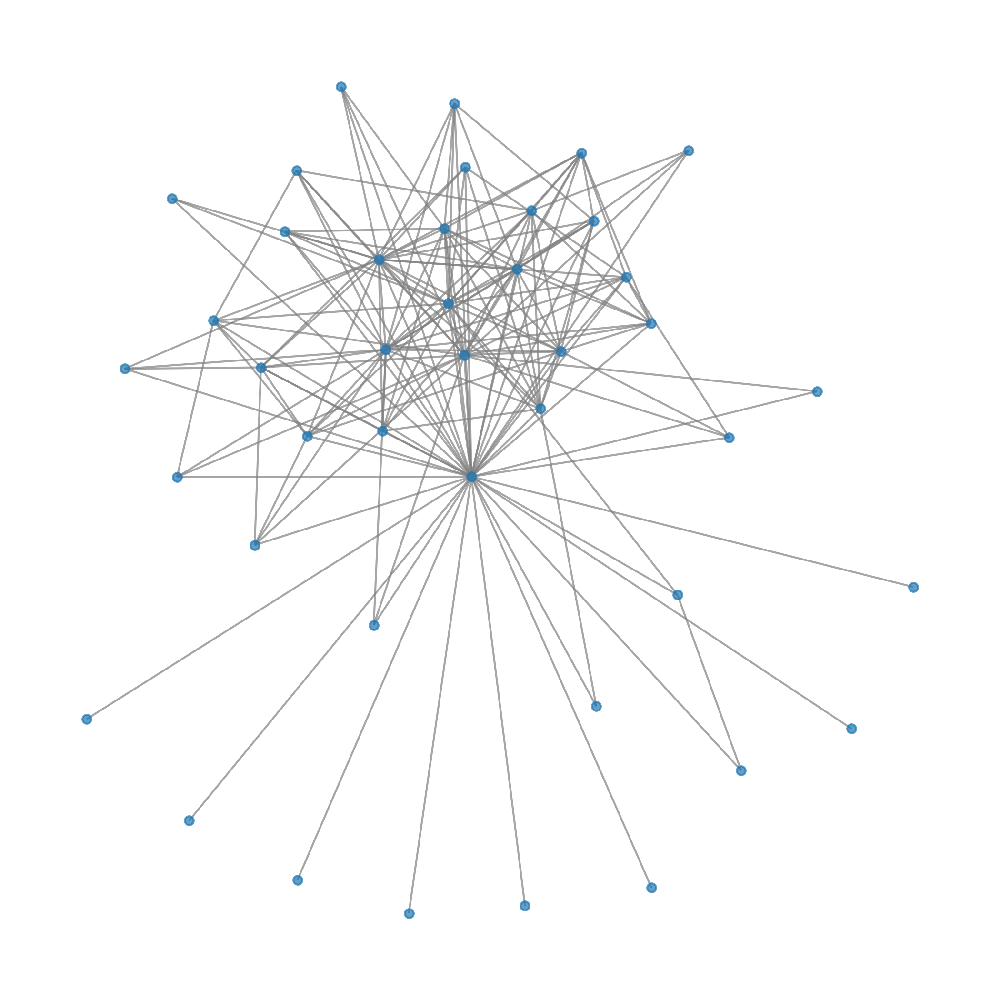
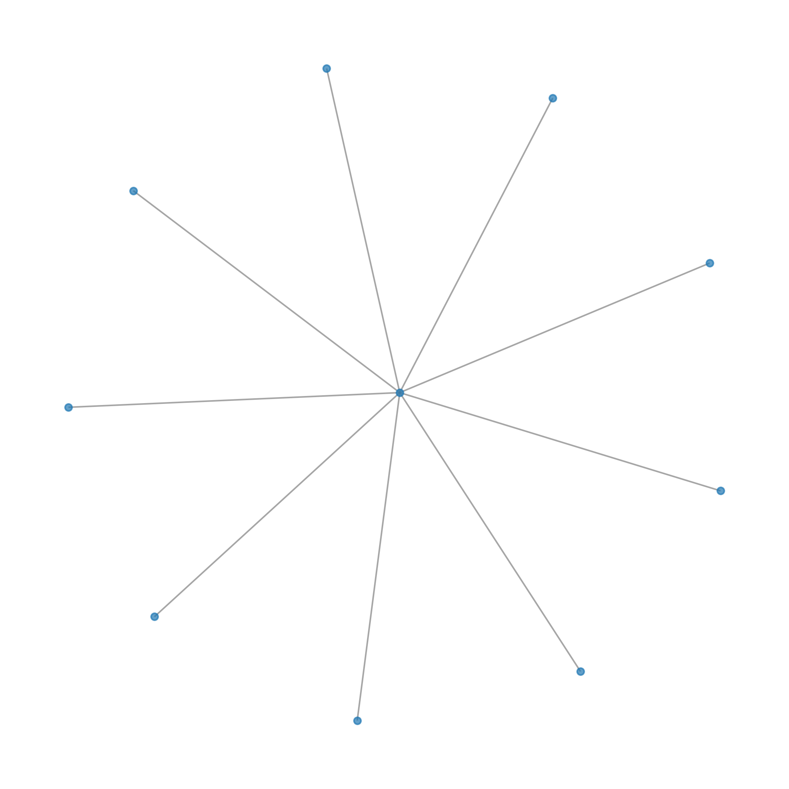

Reference (biogrid+hippie)

Community 0
GO:MF
| source | term_id | annotation | description | intersection_size | p_value | community |
|---|---|---|---|---|---|---|
| GO:MF | GO:0031072 | heat shock protein binding | "Binding to a heat shock protein, a protein synthesized or activated in response to heat shock." [GOC:mah, GOC:vw] | 8 | 1.754139e-12 | 0 |
| GO:MF | GO:0051082 | unfolded protein binding | "Binding to an unfolded protein." [GOC:ai] | 6 | 1.866998e-08 | 0 |
| GO:MF | GO:0044183 | protein folding chaperone | "Binding to a protein or a protein-containing complex to assist the protein folding process." [GOC:mtg_cambridge_2009] | 5 | 1.754970e-07 | 0 |
| GO:MF | GO:0030911 | TPR domain binding | "Binding to a tetratricopeptide repeat (TPR) domain of a protein, the consensus sequence of which is defined by a pattern of small and large hydrophobic amino acids and a structure composed of helices." [GOC:mah] | 3 | 2.243238e-06 | 0 |
| GO:MF | GO:0051879 | Hsp90 protein binding | "Binding to Hsp90 proteins, any of a group of heat shock proteins around 90kDa in size." [GOC:ai] | 4 | 4.661288e-06 | 0 |
| GO:MF | GO:0051087 | protein-folding chaperone binding | "Binding to a chaperone protein, a class of proteins that bind to nascent or unfolded polypeptides and ensure correct folding or transport." [PMID:10585443] | 5 | 5.484521e-06 | 0 |
| GO:MF | GO:0070182 | DNA polymerase binding | "Binding to a DNA polymerase." [GOC:BHF, GOC:mah] | 3 | 7.267925e-05 | 0 |
| GO:MF | GO:0097718 | disordered domain specific binding | "Binding to a disordered domain of a protein." [GOC:gg, PMID:11746698] | 3 | 2.321028e-04 | 0 |
| GO:MF | GO:0031625 | ubiquitin protein ligase binding | "Binding to a ubiquitin protein ligase enzyme, any of the E3 proteins." [GOC:vp] | 5 | 3.333232e-04 | 0 |
| GO:MF | GO:0044389 | ubiquitin-like protein ligase binding | "Binding to a ubiquitin-like protein ligase, such as ubiquitin-ligase." [GOC:jl] | 5 | 4.414219e-04 | 0 |
| GO:MF | GO:0019904 | protein domain specific binding | "Binding to a specific domain of a protein." [GOC:go_curators] | 6 | 6.574976e-04 | 0 |
| GO:MF | GO:0048156 | tau protein binding | "Binding to tau protein. tau is a microtubule-associated protein, implicated in Alzheimer's disease, Down Syndrome and ALS." [GOC:jid] | 3 | 7.794402e-04 | 0 |
| GO:MF | GO:0030544 | Hsp70 protein binding | "Binding to a Hsp70 protein, heat shock proteins around 70kDa in size." [ISBN:0198506732] | 3 | 1.234379e-03 | 0 |
| GO:MF | GO:0030235 | nitric-oxide synthase regulator activity | "Binds to and modulates the activity of nitric oxide synthase." [GOC:mah] | 2 | 2.269821e-03 | 0 |
| GO:MF | GO:0004517 | nitric-oxide synthase activity | "Catalysis of the reaction: L-arginine + n NADPH + n H+ + m O2 = citrulline + nitric oxide + n NADP+." [EC:1.14.13.39, RHEA:19897] | 2 | 4.858138e-03 | 0 |
| GO:MF | GO:0019899 | enzyme binding | "Binding to an enzyme, a protein with catalytic activity." [GOC:jl] | 8 | 5.584572e-03 | 0 |
| GO:MF | GO:0023026 | MHC class II protein complex binding | "Binding to a class II major histocompatibility complex." [GOC:mtg_signal, GOC:vw] | 2 | 2.963218e-02 | 0 |
| GO:MF | GO:0001671 | ATPase activator activity | "Binds to and increases the activity of an ATP hydrolysis activity." [GOC:ajp] | 2 | 3.486540e-02 | 0 |
| GO:MF | GO:0140662 | ATP-dependent protein folding chaperone | "Binding to a protein or a protein-containing complex to assist the protein folding process, driven by ATP hydrolysis." [PMID:27365453] | 2 | 4.978589e-02 | 0 |
GO:BP
| source | term_id | annotation | description | intersection_size | p_value | community |
|---|---|---|---|---|---|---|
| GO:BP | GO:0006457 | protein folding | "The process of assisting in the covalent and noncovalent assembly of single chain polypeptides or multisubunit complexes into the correct tertiary structure." [GOC:go_curators, GOC:rb] | 8 | 4.563475e-10 | 0 |
| GO:BP | GO:0051604 | protein maturation | "Any process leading to the attainment of the full functional capacity of a protein." [GOC:ai] | 9 | 1.051697e-08 | 0 |
| GO:BP | GO:0034605 | cellular response to heat | "Any process that results in a change in state or activity of a cell (in terms of movement, secretion, enzyme production, gene expression, etc.) as a result of a heat stimulus, a temperature stimulus above the optimal temperature for that organism." [GOC:mah] | 5 | 6.221887e-07 | 0 |
| GO:BP | GO:0061077 | chaperone-mediated protein folding | "The process of inhibiting aggregation and assisting in the covalent and noncovalent assembly of single chain polypeptides or multisubunit complexes into the correct tertiary structure that is dependent on interaction with a chaperone." [GOC:dph, GOC:vw] | 5 | 1.209519e-06 | 0 |
| GO:BP | GO:0051131 | chaperone-mediated protein complex assembly | "The aggregation, arrangement and bonding together of a set of components to form a protein complex, mediated by chaperone molecules that do not form part of the finished complex." [GOC:ai] | 4 | 1.706051e-06 | 0 |
| GO:BP | GO:0009408 | response to heat | "Any process that results in a change in state or activity of a cell or an organism (in terms of movement, secretion, enzyme production, gene expression, etc.) as a result of a heat stimulus, a temperature stimulus above the optimal temperature for that organism." [GOC:lr] | 5 | 5.890181e-06 | 0 |
| GO:BP | GO:1905323 | telomerase holoenzyme complex assembly | "The aggregation, arrangement and bonding together of a set of components to form a telomerase holoenzyme complex." [GO_REF:0000079, GOC:TermGenie, PMID:26305931] | 3 | 1.080481e-05 | 0 |
| GO:BP | GO:0035966 | response to topologically incorrect protein | "Any process that results in a change in state or activity of a cell or an organism (in terms of movement, secretion, enzyme production, gene expression, etc.) as a result of a protein that is not folded in its correct three-dimensional structure." [GOC:bf] | 5 | 5.432888e-05 | 0 |
| GO:BP | GO:0031647 | regulation of protein stability | "Any process that affects the structure and integrity of a protein, altering the likelihood of its degradation or aggregation." [GOC:dph, GOC:mah, GOC:tb] | 6 | 5.550609e-05 | 0 |
| GO:BP | GO:0009266 | response to temperature stimulus | "Any process that results in a change in state or activity of a cell or an organism (in terms of movement, secretion, enzyme production, gene expression, etc.) as a result of a temperature stimulus." [GOC:hb] | 5 | 8.089239e-05 | 0 |
| GO:BP | GO:0050821 | protein stabilization | "Any process involved in maintaining the structure and integrity of a protein and preventing it from degradation or aggregation." [GOC:ai] | 5 | 3.196989e-04 | 0 |
| GO:BP | GO:0019538 | protein metabolic process | "The chemical reactions and pathways involving a protein. Includes protein modification." [GOC:ma] | 12 | 1.223836e-03 | 0 |
| GO:BP | GO:0006986 | response to unfolded protein | "Any process that results in a change in state or activity of a cell or an organism (in terms of movement, secretion, enzyme production, gene expression, etc.) as a result of an unfolded protein stimulus." [GOC:jl] | 4 | 2.354740e-03 | 0 |
| GO:BP | GO:0031399 | regulation of protein modification process | "Any process that modulates the frequency, rate or extent of the covalent alteration of one or more amino acid residues within a protein." [GOC:mah, GOC:tb] | 7 | 2.500666e-03 | 0 |
| GO:BP | GO:1903146 | regulation of autophagy of mitochondrion | "Any process that modulates the frequency, rate or extent of mitochondrion degradation by an autophagic process." [GO_REF:0000058, GOC:autophagy, GOC:bf, GOC:PARL, GOC:TermGenie, PMID:24600391] | 3 | 4.029578e-03 | 0 |
| GO:BP | GO:0031396 | regulation of protein ubiquitination | "Any process that modulates the frequency, rate or extent of the addition of ubiquitin groups to a protein." [GOC:mah] | 4 | 9.147453e-03 | 0 |
| GO:BP | GO:0007004 | telomere maintenance via telomerase | "The maintenance of proper telomeric length by the addition of telomeric repeats by telomerase." [GOC:elh] | 3 | 1.034645e-02 | 0 |
| GO:BP | GO:0006278 | RNA-templated DNA biosynthetic process | "A DNA biosynthetic process that uses RNA as a template for RNA-dependent DNA polymerases (e.g. reverse transcriptase) that synthesize the new strand." [GOC:mah, ISBN:0198506732] | 3 | 1.199252e-02 | 0 |
| GO:BP | GO:0010833 | telomere maintenance via telomere lengthening | "Any process that contributes to the maintenance of proper telomeric length and structure by affecting and monitoring the activity of telomeric proteins and lengthening the telomeric DNA." [GOC:dph, GOC:tb] | 3 | 1.870924e-02 | 0 |
| GO:BP | GO:1903320 | regulation of protein modification by small protein conjugation or removal | "Any process that modulates the frequency, rate or extent of protein modification by small protein conjugation or removal." [GO_REF:0000058, GOC:TermGenie, GOC:vw] | 4 | 1.960645e-02 | 0 |
| GO:BP | GO:1901873 | regulation of post-translational protein modification | "Any process that modulates the frequency, rate or extent of post-translational protein modification." [GOC:TermGenie, GOC:yaf, PMID:21209915] | 4 | 2.126969e-02 | 0 |
| GO:BP | GO:0042221 | response to chemical | "Any process that results in a change in state or activity of a cell or an organism (in terms of movement, secretion, enzyme production, gene expression, etc.) as a result of a chemical stimulus." [GOC:jl] | 10 | 3.080633e-02 | 0 |
| GO:BP | GO:0090084 | negative regulation of inclusion body assembly | "Any process that decreases the rate, frequency, or extent of inclusion body assembly. Inclusion body assembly is the aggregation, arrangement and bonding together of a set of components to form an inclusion body." [GOC:BHF, GOC:dph, GOC:tb] | 2 | 3.561691e-02 | 0 |
| GO:BP | GO:0009894 | regulation of catabolic process | "Any process that modulates the frequency, rate, or extent of the chemical reactions and pathways resulting in the breakdown of substances." [GOC:go_curators] | 6 | 4.048025e-02 | 0 |
REAC
| source | term_id | annotation | description | intersection_size | p_value | community |
|---|---|---|---|---|---|---|
| REAC | REAC:R-HSA-3371497 | HSP90 chaperone cycle for steroid hormone receptors (SHR) in the presence of ligand | HSP90 chaperone cycle for steroid hormone receptors (SHR) in the presence of ligand | 6 | 2.034731e-09 | 0 |
| REAC | REAC:R-HSA-3371568 | Attenuation phase | Attenuation phase | 4 | 1.640997e-07 | 0 |
| REAC | REAC:R-HSA-9013418 | RHOBTB2 GTPase cycle | RHOBTB2 GTPase cycle | 4 | 1.445009e-06 | 0 |
| REAC | REAC:R-HSA-3371571 | HSF1-dependent transactivation | HSF1-dependent transactivation | 4 | 1.733127e-06 | 0 |
| REAC | REAC:R-HSA-3371556 | Cellular response to heat stress | Cellular response to heat stress | 5 | 3.732233e-06 | 0 |
| REAC | REAC:R-HSA-9706574 | RHOBTB GTPase Cycle | RHOBTB GTPase Cycle | 4 | 8.492277e-06 | 0 |
| REAC | REAC:R-HSA-2262752 | Cellular responses to stress | Cellular responses to stress | 8 | 2.996429e-05 | 0 |
| REAC | REAC:R-HSA-8953897 | Cellular responses to stimuli | Cellular responses to stimuli | 8 | 3.434570e-05 | 0 |
| REAC | REAC:R-HSA-3371511 | HSF1 activation | HSF1 activation | 3 | 4.960415e-05 | 0 |
| REAC | REAC:R-HSA-9820962 | Assembly and release of respiratory syncytial virus (RSV) virions | Assembly and release of respiratory syncytial virus (RSV) virions | 2 | 2.769856e-04 | 0 |
| REAC | REAC:R-HSA-9834752 | Respiratory syncytial virus genome replication | Respiratory syncytial virus genome replication | 2 | 2.769856e-04 | 0 |
| REAC | REAC:R-HSA-8863795 | Downregulation of ERBB2 signaling | Downregulation of ERBB2 signaling | 3 | 6.541317e-04 | 0 |
| REAC | REAC:R-HSA-5675482 | Regulation of necroptotic cell death | Regulation of necroptotic cell death | 3 | 1.003045e-03 | 0 |
| REAC | REAC:R-HSA-5213460 | RIPK1-mediated regulated necrosis | RIPK1-mediated regulated necrosis | 3 | 1.003045e-03 | 0 |
| REAC | REAC:R-HSA-9665249 | Resistance of ERBB2 KD mutants to afatinib | Resistance of ERBB2 KD mutants to afatinib | 2 | 1.660101e-03 | 0 |
| REAC | REAC:R-HSA-9665737 | Drug resistance in ERBB2 TMD/JMD mutants | Drug resistance in ERBB2 TMD/JMD mutants | 2 | 1.660101e-03 | 0 |
| REAC | REAC:R-HSA-9652282 | Drug-mediated inhibition of ERBB2 signaling | Drug-mediated inhibition of ERBB2 signaling | 2 | 1.660101e-03 | 0 |
| REAC | REAC:R-HSA-9665230 | Drug resistance in ERBB2 KD mutants | Drug resistance in ERBB2 KD mutants | 2 | 1.660101e-03 | 0 |
| REAC | REAC:R-HSA-9665251 | Resistance of ERBB2 KD mutants to lapatinib | Resistance of ERBB2 KD mutants to lapatinib | 2 | 1.660101e-03 | 0 |
| REAC | REAC:R-HSA-9665245 | Resistance of ERBB2 KD mutants to tesevatinib | Resistance of ERBB2 KD mutants to tesevatinib | 2 | 1.660101e-03 | 0 |
| REAC | REAC:R-HSA-9665244 | Resistance of ERBB2 KD mutants to sapitinib | Resistance of ERBB2 KD mutants to sapitinib | 2 | 1.660101e-03 | 0 |
| REAC | REAC:R-HSA-9665247 | Resistance of ERBB2 KD mutants to osimertinib | Resistance of ERBB2 KD mutants to osimertinib | 2 | 1.660101e-03 | 0 |
| REAC | REAC:R-HSA-9665246 | Resistance of ERBB2 KD mutants to neratinib | Resistance of ERBB2 KD mutants to neratinib | 2 | 1.660101e-03 | 0 |
| REAC | REAC:R-HSA-9665250 | Resistance of ERBB2 KD mutants to AEE788 | Resistance of ERBB2 KD mutants to AEE788 | 2 | 1.660101e-03 | 0 |
| REAC | REAC:R-HSA-9665233 | Resistance of ERBB2 KD mutants to trastuzumab | Resistance of ERBB2 KD mutants to trastuzumab | 2 | 1.660101e-03 | 0 |
| REAC | REAC:R-HSA-9679191 | Potential therapeutics for SARS | Potential therapeutics for SARS | 4 | 3.098241e-03 | 0 |
| REAC | REAC:R-HSA-1227986 | Signaling by ERBB2 | Signaling by ERBB2 | 3 | 3.359727e-03 | 0 |
| REAC | REAC:R-HSA-5336415 | Uptake and function of diphtheria toxin | Uptake and function of diphtheria toxin | 2 | 4.145728e-03 | 0 |
| REAC | REAC:R-HSA-8937144 | Aryl hydrocarbon receptor signalling | Aryl hydrocarbon receptor signalling | 2 | 4.145728e-03 | 0 |
| REAC | REAC:R-HSA-5218859 | Regulated Necrosis | Regulated Necrosis | 3 | 6.784591e-03 | 0 |
| REAC | REAC:R-HSA-9634285 | Constitutive Signaling by Overexpressed ERBB2 | Constitutive Signaling by Overexpressed ERBB2 | 2 | 9.933477e-03 | 0 |
| REAC | REAC:R-HSA-9012999 | RHO GTPase cycle | RHO GTPase cycle | 5 | 1.270522e-02 | 0 |
| REAC | REAC:R-HSA-8939211 | ESR-mediated signaling | ESR-mediated signaling | 4 | 1.280300e-02 | 0 |
| REAC | REAC:R-HSA-162582 | Signal Transduction | Signal Transduction | 9 | 2.060508e-02 | 0 |
| REAC | REAC:R-HSA-5637810 | Constitutive Signaling by EGFRvIII | Constitutive Signaling by EGFRvIII | 2 | 2.147562e-02 | 0 |
| REAC | REAC:R-HSA-5637812 | Signaling by EGFRvIII in Cancer | Signaling by EGFRvIII in Cancer | 2 | 2.147562e-02 | 0 |
| REAC | REAC:R-HSA-9665348 | Signaling by ERBB2 ECD mutants | Signaling by ERBB2 ECD mutants | 2 | 2.504123e-02 | 0 |
| REAC | REAC:R-HSA-9820965 | Respiratory syncytial virus (RSV) genome replication, transcription and translation | Respiratory syncytial virus (RSV) genome replication, transcription and translation | 2 | 3.298539e-02 | 0 |
| REAC | REAC:R-HSA-399954 | Sema3A PAK dependent Axon repulsion | Sema3A PAK dependent Axon repulsion | 2 | 3.298539e-02 | 0 |
| REAC | REAC:R-HSA-1236382 | Constitutive Signaling by Ligand-Responsive EGFR Cancer Variants | Constitutive Signaling by Ligand-Responsive EGFR Cancer Variants | 2 | 3.736306e-02 | 0 |
| REAC | REAC:R-HSA-5637815 | Signaling by Ligand-Responsive EGFR Variants in Cancer | Signaling by Ligand-Responsive EGFR Variants in Cancer | 2 | 3.736306e-02 | 0 |
| REAC | REAC:R-HSA-9006931 | Signaling by Nuclear Receptors | Signaling by Nuclear Receptors | 4 | 4.052244e-02 | 0 |
| REAC | REAC:R-HSA-9665686 | Signaling by ERBB2 TMD/JMD mutants | Signaling by ERBB2 TMD/JMD mutants | 2 | 4.201052e-02 | 0 |
GO:CC
| source | term_id | annotation | description | intersection_size | p_value | community |
|---|---|---|---|---|---|---|
| GO:CC | GO:0101031 | protein folding chaperone complex | "A protein complex required for the non-covalent folding or unfolding, maturation, stabilization or assembly or disassembly of macromolecular structures. Usually active during or immediately after completion of translation. Many chaperone complexes contain heat shock proteins." [GOC:bhm, PMID:21855797] | 5 | 4.346335e-09 | 0 |
| GO:CC | GO:1990565 | HSP90-CDC37 chaperone complex | "A protein kinase chaperone complex required for the proper folding, maturation and stabilization of target proteins (mostly signaling protein kinases, some steroid hormone receptors), usually during or immediately after completion of translation. The highly conserved, phosphorylated CDC37-Ser13 (vertebrates) or cdc37-Ser14 (yeast) is essential for complex assembly and target protein binding. CDC37-Ser13 (Ser14) is phosphorylated by Casein kinase II (CK2), which in turn is a target of CDC37 creating a positive feedback loop. Complex binding also prevents rapid ubiquitin-dependent proteosomal degradation of target proteins." [GOC:bhm, GOC:pad, GOC:PARL, PMID:21855797, PMID:22939624] | 2 | 4.830828e-05 | 0 |
| GO:CC | GO:0140535 | intracellular protein-containing complex | "A protein-containing complex located intracellularly." [GOC:pg] | 7 | 8.708500e-05 | 0 |
| GO:CC | GO:0005829 | cytosol | "The part of the cytoplasm that does not contain organelles but which does contain other particulate matter, such as protein complexes." [GOC:hjd, GOC:jl] | 12 | 4.120288e-04 | 0 |
| GO:CC | GO:0044294 | dendritic growth cone | "The migrating motile tip of a growing nerve cell dendrite." [GOC:jl] | 2 | 1.734705e-03 | 0 |
| GO:CC | GO:0044292 | dendrite terminus | "A structure at the distal end of a dendrite adapted to carry out a specific function, e.g. dendriole." [GOC:jl, NIF_Subcellular:sao28175134] | 2 | 4.377037e-03 | 0 |
| GO:CC | GO:0120293 | dynein axonemal particle | "An aggregation of axonemal dyneins, their specific assembly factors, and broadly-acting chaperones that is located in the cytoplasm." [GOC:krc, PMID:30561330, PMID:32898505, PMID:33263282] | 2 | 9.119082e-03 | 0 |
| GO:CC | GO:0070062 | extracellular exosome | "A vesicle that is released into the extracellular region by fusion of the limiting endosomal membrane of a multivesicular body with the plasma membrane. Extracellular exosomes, also simply called exosomes, have a diameter of about 40-100 nm." [GOC:BHF, GOC:mah, GOC:vesicles, PMID:15908444, PMID:17641064, PMID:19442504, PMID:19498381, PMID:22418571, PMID:24009894] | 7 | 1.727844e-02 | 0 |
| GO:CC | GO:1903561 | extracellular vesicle | "Any vesicle that is part of the extracellular region." [GO_REF:0000064, GOC:pm, GOC:TermGenie, PMID:24769233] | 7 | 1.890467e-02 | 0 |
| GO:CC | GO:0065010 | extracellular membrane-bounded organelle | "Organized structure of distinctive morphology and function, bounded by a lipid bilayer membrane and occurring outside the cell." [GOC:isa_complete] | 7 | 1.896098e-02 | 0 |
| GO:CC | GO:0043230 | extracellular organelle | "Organized structure of distinctive morphology and function, occurring outside the cell. Includes, for example, extracellular membrane vesicles (EMVs) and the cellulosomes of anaerobic bacteria and fungi." [GOC:jl, PMID:9914479] | 7 | 1.896098e-02 | 0 |
| GO:CC | GO:0044295 | axonal growth cone | "The migrating motile tip of a growing nerve cell axon." [GOC:jl, NIF_Subcellular:sao203987954] | 2 | 2.080262e-02 | 0 |
| GO:CC | GO:0005654 | nucleoplasm | "That part of the nuclear content other than the chromosomes or the nucleolus." [GOC:ma, ISBN:0124325653] | 9 | 3.593721e-02 | 0 |
| GO:CC | GO:0005737 | cytoplasm | "The contents of a cell excluding the plasma membrane and nucleus, but including other subcellular structures." [ISBN:0198547684] | 14 | 4.448042e-02 | 0 |
CORUM
| source | term_id | annotation | description | intersection_size | p_value | community |
|---|---|---|---|---|---|---|
| CORUM | CORUM:5269 | TNF-alpha/NF-kappa B signaling complex 8 | TNF-alpha/NF-kappa B signaling complex 8 | 4 | 1.025919e-07 | 0 |
| CORUM | CORUM:5268 | TNF-alpha/NF-kappa B signaling complex 7 | TNF-alpha/NF-kappa B signaling complex 7 | 4 | 4.774024e-07 | 0 |
| CORUM | CORUM:2112 | CDC37-HSP90AA1-HSP90AB1-MAP3K11 complex | CDC37-HSP90AA1-HSP90AB1-MAP3K11 complex | 3 | 1.322697e-05 | 0 |
| CORUM | CORUM:5285 | TNF-alpha/NF-kappa B signaling complex 9 | TNF-alpha/NF-kappa B signaling complex 9 | 3 | 3.301605e-05 | 0 |
| CORUM | CORUM:5234 | IKBKB-CDC37-KIAA1967-HSP90AB1-HSP90AA1 complex | IKBKB-CDC37-KIAA1967-HSP90AB1-HSP90AA1 complex | 3 | 3.301605e-05 | 0 |
| CORUM | CORUM:5212 | Kinase maturation complex 2 | Kinase maturation complex 2 | 3 | 1.840293e-04 | 0 |
| CORUM | CORUM:5286 | TNF-alpha/NF-kappa B signaling complex 10 | TNF-alpha/NF-kappa B signaling complex 10 | 3 | 3.931236e-04 | 0 |
| CORUM | CORUM:5266 | TNF-alpha/NF-kappa B signaling complex 6 | TNF-alpha/NF-kappa B signaling complex 6 | 3 | 9.325808e-04 | 0 |
| CORUM | CORUM:4158 | HSP90-FKBP38-CAM-Ca(2+) complex | HSP90-FKBP38-CAM-Ca(2+) complex | 2 | 1.399686e-03 | 0 |
| CORUM | CORUM:6591 | Hsp90-p23 complex | Hsp90-p23 complex | 2 | 1.399686e-03 | 0 |
| CORUM | CORUM:5199 | Kinase maturation complex 1 | Kinase maturation complex 1 | 3 | 1.817524e-03 | 0 |
| CORUM | CORUM:5849 | HSP90-CDC37-LRRK2 complex | HSP90-CDC37-LRRK2 complex | 2 | 4.192434e-03 | 0 |
| CORUM | CORUM:5980 | LRRK2-CHIP-HSP90 complex | LRRK2-CHIP-HSP90 complex | 2 | 4.192434e-03 | 0 |
| CORUM | CORUM:6512 | ILK-HSP90-CDC37 complex | ILK-HSP90-CDC37 complex | 2 | 4.192434e-03 | 0 |
TF
| source | term_id | annotation | description | intersection_size | p_value | community |
|---|---|---|---|---|---|---|
| TF | TF:M11655_1 | Factor: HSF1; motif: NGAANGTTCKRGAAN; match class: 1 | Factor: HSF1; motif: NGAANGTTCKRGAAN; match class: 1 | 5 | 0.000005 | 0 |
| TF | TF:M11656_1 | Factor: HSF1; motif: RGAANRTTCYRGAAN; match class: 1 | Factor: HSF1; motif: RGAANRTTCYRGAAN; match class: 1 | 4 | 0.021030 | 0 |
| TF | TF:M09950_1 | Factor: HSF1; motif: NRGAANNTTCYRGAA; match class: 1 | Factor: HSF1; motif: NRGAANNTTCYRGAA; match class: 1 | 4 | 0.035952 | 0 |
WP
| source | term_id | annotation | description | intersection_size | p_value | community |
|---|---|---|---|---|---|---|
| WP | WP:WP2882 | Nuclear receptors meta pathway | Nuclear receptors meta pathway | 6 | 0.000207 | 0 |
| WP | WP:WP2873 | Aryl hydrocarbon receptor pathway | Aryl hydrocarbon receptor pathway | 3 | 0.003647 | 0 |
KEGG
| source | term_id | annotation | description | intersection_size | p_value | community |
|---|---|---|---|---|---|---|
| KEGG | KEGG:04141 | Protein processing in endoplasmic reticulum | Protein processing in endoplasmic reticulum | 4 | 0.002572 | 0 |
| KEGG | KEGG:04915 | Estrogen signaling pathway | Estrogen signaling pathway | 3 | 0.035426 | 0 |
HPA
| source | term_id | annotation | description | intersection_size | p_value | community |
|---|---|---|---|---|---|---|
| HPA | HPA:0471461 | Skin 2; langerhans cells[≥Low] | Skin 2; langerhans cells[≥Low] | 7 | 0.003082 | 0 |
| HPA | HPA:0471411 | Skin 2; cells in spinous layer[≥Low] | Skin 2; cells in spinous layer[≥Low] | 7 | 0.005885 | 0 |
| HPA | HPA:0471391 | Skin 2; cells in basal layer[≥Low] | Skin 2; cells in basal layer[≥Low] | 7 | 0.011211 | 0 |
| HPA | HPA:0471441 | Skin 2; fibrohistiocytic cells[≥Low] | Skin 2; fibrohistiocytic cells[≥Low] | 7 | 0.016443 | 0 |
| HPA | HPA:0470181 | Skin 2; cells in granular layer[≥Low] | Skin 2; cells in granular layer[≥Low] | 6 | 0.021659 | 0 |
| HPA | HPA:0471471 | Skin 2; lymphocytes[≥Low] | Skin 2; lymphocytes[≥Low] | 6 | 0.039320 | 0 |
Community 1
GO:MF
| source | term_id | annotation | description | intersection_size | p_value | community |
|---|---|---|---|---|---|---|
| GO:MF | GO:0102758 | very-long-chain enoyl-CoA reductase activity | "Catalysis of the reaction: a very-long-chain 2,3-saturated fatty acyl-CoA + NADP+ = a very-long-chain (2E)-enoyl-CoA + H+ + NADPH. This reaction is the fourth (reduction) step of the four-step fatty acid elongation cycle in the endoplasmic reticulum that extends fatty acids of C-16 or longer with an additional 2-C unit." [PMID:16564093, PMID:19763486, RHEA:14473] | 1 | 0.049891 | 1 |
Community 2
GO:BP
| source | term_id | annotation | description | intersection_size | p_value | community |
|---|---|---|---|---|---|---|
| GO:BP | GO:0044111 | formation of structure involved in a symbiotic process | "The progression of an organism from an initial condition to a later condition, occurring when the organism is in a symbiotic interaction." [GO:jl, GOC:pamgo_curators] | 1 | 0.049542 | 2 |
CORUM
| source | term_id | annotation | description | intersection_size | p_value | community |
|---|---|---|---|---|---|---|
| CORUM | CORUM:6690 | NEDD4-PI4K2A complex | NEDD4-PI4K2A complex | 1 | 0.049932 | 2 |
Community 3
MIRNA
| source | term_id | annotation | description | intersection_size | p_value | community |
|---|---|---|---|---|---|---|
| MIRNA | MIRNA:hsa-mir-6723-5p | hsa-mir-6723-5p | hsa-mir-6723-5p | 1 | 0.033893 | 3 |
Community 7
MIRNA
| source | term_id | annotation | description | intersection_size | p_value | community |
|---|---|---|---|---|---|---|
| MIRNA | MIRNA:hsa-mir-6786-5p | hsa-mir-6786-5p | hsa-mir-6786-5p | 1 | 0.031633 | 7 |
| MIRNA | MIRNA:hsa-mir-187-3p | hsa-mir-187-3p | hsa-mir-187-3p | 1 | 0.042931 | 7 |
Community 9
GO:MF
| source | term_id | annotation | description | intersection_size | p_value | community |
|---|---|---|---|---|---|---|
| GO:MF | GO:0036004 | GAF domain binding | "Binding to a GAF protein domain." [GOC:yaf, InterPro:IPR003018] | 1 | 0.024946 | 9 |
Community 12
HP
| source | term_id | annotation | description | intersection_size | p_value | community |
|---|---|---|---|---|---|---|
| HP | HP:0010518 | Thyroglossal cyst | An abnormality of the thyroid gland owing to the presence of a fibrous cyst resulting from the persistence of the thyroglossal duct. | 1 | 0.049962 | 12 |
Community 13
GO:MF
| source | term_id | annotation | description | intersection_size | p_value | community |
|---|---|---|---|---|---|---|
| GO:MF | GO:0003881 | CDP-diacylglycerol-inositol 3-phosphatidyltransferase activity | "Catalysis of the reaction: myo-inositol + CDP-diacylglycerol = 1-phosphatidyl-1D-myo-inositol + CMP + H+." [EC:2.7.8.11, RHEA:11580] | 1 | 0.024946 | 13 |
Community 14
GO:MF
| source | term_id | annotation | description | intersection_size | p_value | community |
|---|---|---|---|---|---|---|
| GO:MF | GO:0004113 | 2',3'-cyclic-nucleotide 3'-phosphodiesterase activity | "Catalysis of the reaction: nucleoside 2',3'-cyclic phosphate + H2O = nucleoside 2'-phosphate." [EC:3.1.4.37] | 1 | 0.024946 | 14 |
WP
| source | term_id | annotation | description | intersection_size | p_value | community |
|---|---|---|---|---|---|---|
| WP | WP:WP2276 | Glial cell differentiation | Glial cell differentiation | 1 | 0.04995 | 14 |
Community 15
GO:CC
| source | term_id | annotation | description | intersection_size | p_value | community |
|---|---|---|---|---|---|---|
| GO:CC | GO:0033186 | CAF-1 complex | "A conserved heterotrimeric protein complex that promotes histone H3 and H4 deposition onto newly synthesized DNA during replication or DNA repair; specifically facilitates replication-dependent nucleosome assembly with the major histone H3 (H3.1). In many species the CAF-1 subunits are designated p150, p60, and p48." [PMID:17065558, PMID:17083276] | 1 | 0.029966 | 15 |
HPA
| source | term_id | annotation | description | intersection_size | p_value | community |
|---|---|---|---|---|---|---|
| HPA | HPA:0471383 | Skin 2; arrector pili muscle cells[High] | Skin 2; arrector pili muscle cells[High] | 1 | 0.034172 | 15 |
Reference (biogrid+hippie)

Community 0
CORUM
| source | term_id | annotation | description | intersection_size | p_value | community |
|---|---|---|---|---|---|---|
| CORUM | CORUM:5269 | TNF-alpha/NF-kappa B signaling complex 8 | TNF-alpha/NF-kappa B signaling complex 8 | 4 | 1.106106e-08 | 0 |
| CORUM | CORUM:5268 | TNF-alpha/NF-kappa B signaling complex 7 | TNF-alpha/NF-kappa B signaling complex 7 | 4 | 5.154492e-08 | 0 |
| CORUM | CORUM:2112 | CDC37-HSP90AA1-HSP90AB1-MAP3K11 complex | CDC37-HSP90AA1-HSP90AB1-MAP3K11 complex | 3 | 2.493754e-06 | 0 |
| CORUM | CORUM:5285 | TNF-alpha/NF-kappa B signaling complex 9 | TNF-alpha/NF-kappa B signaling complex 9 | 3 | 6.228851e-06 | 0 |
| CORUM | CORUM:5234 | IKBKB-CDC37-KIAA1967-HSP90AB1-HSP90AA1 complex | IKBKB-CDC37-KIAA1967-HSP90AB1-HSP90AA1 complex | 3 | 6.228851e-06 | 0 |
| CORUM | CORUM:5212 | Kinase maturation complex 2 | Kinase maturation complex 2 | 3 | 3.478872e-05 | 0 |
| CORUM | CORUM:5286 | TNF-alpha/NF-kappa B signaling complex 10 | TNF-alpha/NF-kappa B signaling complex 10 | 3 | 7.441485e-05 | 0 |
| CORUM | CORUM:5266 | TNF-alpha/NF-kappa B signaling complex 6 | TNF-alpha/NF-kappa B signaling complex 6 | 3 | 1.768829e-04 | 0 |
| CORUM | CORUM:5199 | Kinase maturation complex 1 | Kinase maturation complex 1 | 3 | 3.454209e-04 | 0 |
| CORUM | CORUM:6591 | Hsp90-p23 complex | Hsp90-p23 complex | 2 | 4.219436e-04 | 0 |
| CORUM | CORUM:5849 | HSP90-CDC37-LRRK2 complex | HSP90-CDC37-LRRK2 complex | 2 | 1.264583e-03 | 0 |
| CORUM | CORUM:6512 | ILK-HSP90-CDC37 complex | ILK-HSP90-CDC37 complex | 2 | 1.264583e-03 | 0 |
GO:CC
| source | term_id | annotation | description | intersection_size | p_value | community |
|---|---|---|---|---|---|---|
| GO:CC | GO:0140535 | intracellular protein-containing complex | "A protein-containing complex located intracellularly." [GOC:pg] | 8 | 4.962124e-08 | 0 |
| GO:CC | GO:0101031 | protein folding chaperone complex | "A protein complex required for the non-covalent folding or unfolding, maturation, stabilization or assembly or disassembly of macromolecular structures. Usually active during or immediately after completion of translation. Many chaperone complexes contain heat shock proteins." [GOC:bhm, PMID:21855797] | 4 | 2.327871e-07 | 0 |
| GO:CC | GO:1990565 | HSP90-CDC37 chaperone complex | "A protein kinase chaperone complex required for the proper folding, maturation and stabilization of target proteins (mostly signaling protein kinases, some steroid hormone receptors), usually during or immediately after completion of translation. The highly conserved, phosphorylated CDC37-Ser13 (vertebrates) or cdc37-Ser14 (yeast) is essential for complex assembly and target protein binding. CDC37-Ser13 (Ser14) is phosphorylated by Casein kinase II (CK2), which in turn is a target of CDC37 creating a positive feedback loop. Complex binding also prevents rapid ubiquitin-dependent proteosomal degradation of target proteins." [GOC:bhm, GOC:pad, GOC:PARL, PMID:21855797, PMID:22939624] | 2 | 2.029483e-05 | 0 |
| GO:CC | GO:0034751 | aryl hydrocarbon receptor complex | "A protein complex that acts as an aryl hydrocarbon (Ah) receptor. Cytosolic and nuclear Ah receptor complexes have different subunit composition, but both contain the ligand-binding subunit AhR." [GOC:mah, PMID:7598497] | 2 | 4.256785e-04 | 0 |
| GO:CC | GO:0044294 | dendritic growth cone | "The migrating motile tip of a growing nerve cell dendrite." [GOC:jl] | 2 | 7.293832e-04 | 0 |
| GO:CC | GO:0044292 | dendrite terminus | "A structure at the distal end of a dendrite adapted to carry out a specific function, e.g. dendriole." [GOC:jl, NIF_Subcellular:sao28175134] | 2 | 1.841500e-03 | 0 |
| GO:CC | GO:0005829 | cytosol | "The part of the cytoplasm that does not contain organelles but which does contain other particulate matter, such as protein complexes." [GOC:hjd, GOC:jl] | 9 | 3.238960e-03 | 0 |
| GO:CC | GO:0005654 | nucleoplasm | "That part of the nuclear content other than the chromosomes or the nucleolus." [GOC:ma, ISBN:0124325653] | 8 | 6.323425e-03 | 0 |
| GO:CC | GO:0044295 | axonal growth cone | "The migrating motile tip of a growing nerve cell axon." [GOC:jl, NIF_Subcellular:sao203987954] | 2 | 8.768914e-03 | 0 |
| GO:CC | GO:0000151 | ubiquitin ligase complex | "A protein complex that includes a ubiquitin-protein ligase and enables ubiquitin protein ligase activity. The complex also contains other proteins that may confer substrate specificity on the complex." [GOC:jh2, PMID:9529603] | 3 | 3.780219e-02 | 0 |
| GO:CC | GO:0019005 | SCF ubiquitin ligase complex | "A ubiquitin ligase complex in which a cullin from the Cul1 subfamily and a RING domain protein form the catalytic core; substrate specificity is conferred by a Skp1 adaptor and an F-box protein. SCF complexes are involved in targeting proteins for degradation by the proteasome. The best characterized complexes are those from yeast and mammals (with core subunits named Cdc53/Cul1, Rbx1/Hrt1/Roc1)." [PMID:15571813, PMID:15688063] | 2 | 4.157750e-02 | 0 |
| GO:CC | GO:0031981 | nuclear lumen | "The volume enclosed by the nuclear inner membrane." [GOC:mah, GOC:pz] | 8 | 4.601893e-02 | 0 |
GO:MF
| source | term_id | annotation | description | intersection_size | p_value | community |
|---|---|---|---|---|---|---|
| GO:MF | GO:0051082 | unfolded protein binding | "Binding to an unfolded protein." [GOC:ai] | 5 | 2.203802e-07 | 0 |
| GO:MF | GO:0031072 | heat shock protein binding | "Binding to a heat shock protein, a protein synthesized or activated in response to heat shock." [GOC:mah, GOC:vw] | 5 | 4.655173e-07 | 0 |
| GO:MF | GO:0070182 | DNA polymerase binding | "Binding to a DNA polymerase." [GOC:BHF, GOC:mah] | 3 | 1.777702e-05 | 0 |
| GO:MF | GO:0048156 | tau protein binding | "Binding to tau protein. tau is a microtubule-associated protein, implicated in Alzheimer's disease, Down Syndrome and ALS." [GOC:jid] | 3 | 1.912986e-04 | 0 |
| GO:MF | GO:0051879 | Hsp90 protein binding | "Binding to Hsp90 proteins, any of a group of heat shock proteins around 90kDa in size." [GOC:ai] | 3 | 2.052428e-04 | 0 |
| GO:MF | GO:0030911 | TPR domain binding | "Binding to a tetratricopeptide repeat (TPR) domain of a protein, the consensus sequence of which is defined by a pattern of small and large hydrophobic amino acids and a structure composed of helices." [GOC:mah] | 2 | 8.312332e-04 | 0 |
| GO:MF | GO:0030235 | nitric-oxide synthase regulator activity | "Binds to and modulates the activity of nitric oxide synthase." [GOC:mah] | 2 | 8.312332e-04 | 0 |
| GO:MF | GO:0004517 | nitric-oxide synthase activity | "Catalysis of the reaction: L-arginine + n NADPH + n H+ + m O2 = citrulline + nitric oxide + n NADP+." [EC:1.14.13.39, RHEA:19897] | 2 | 1.779806e-03 | 0 |
| GO:MF | GO:0008092 | cytoskeletal protein binding | "Binding to a protein component of a cytoskeleton (actin, microtubule, or intermediate filament cytoskeleton)." [GOC:mah] | 5 | 1.080277e-02 | 0 |
| GO:MF | GO:0023026 | MHC class II protein complex binding | "Binding to a class II major histocompatibility complex." [GOC:mtg_signal, GOC:vw] | 2 | 1.087595e-02 | 0 |
| GO:MF | GO:0140096 | catalytic activity, acting on a protein | "Catalytic activity that acts to modify a protein." [GOC:molecular_function_refactoring, GOC:pdt] | 7 | 1.588492e-02 | 0 |
| GO:MF | GO:0097718 | disordered domain specific binding | "Binding to a disordered domain of a protein." [GOC:gg, PMID:11746698] | 2 | 1.597762e-02 | 0 |
| GO:MF | GO:0140662 | ATP-dependent protein folding chaperone | "Binding to a protein or a protein-containing complex to assist the protein folding process, driven by ATP hydrolysis." [PMID:27365453] | 2 | 1.828984e-02 | 0 |
| GO:MF | GO:0023023 | MHC protein complex binding | "Binding to a major histocompatibility complex." [GOC:mtg_signal, GOC:vw] | 2 | 2.075688e-02 | 0 |
| GO:MF | GO:0016709 | oxidoreductase activity, acting on paired donors, with incorporation or reduction of molecular oxygen, NAD(P)H as one donor, and incorporation of one atom of oxygen | "Catalysis of an oxidation-reduction (redox) reaction in which hydrogen or electrons are transferred from NADH or NADPH and one other donor, and one atom of oxygen is incorporated into one donor." [EC:1.14.13.-] | 2 | 3.376768e-02 | 0 |
| GO:MF | GO:0019904 | protein domain specific binding | "Binding to a specific domain of a protein." [GOC:go_curators] | 4 | 3.521473e-02 | 0 |
| GO:MF | GO:0003755 | peptidyl-prolyl cis-trans isomerase activity | "Catalysis of the reaction: peptidyl-proline (omega=180) = peptidyl-proline (omega=0)." [EC:5.2.1.8] | 2 | 3.879627e-02 | 0 |
| GO:MF | GO:0016859 | cis-trans isomerase activity | "Catalysis of a reaction that interconverts cis and trans isomers. Atoms or groups are termed cis or trans to one another when they lie respectively on the same or on opposite sides of a reference plane identifiable as common among stereoisomers." [GOC:mah, ISBN:0198506732] | 2 | 4.416930e-02 | 0 |
REAC
| source | term_id | annotation | description | intersection_size | p_value | community |
|---|---|---|---|---|---|---|
| REAC | REAC:R-HSA-8937144 | Aryl hydrocarbon receptor signalling | Aryl hydrocarbon receptor signalling | 3 | 0.000001 | 0 |
| REAC | REAC:R-HSA-3371497 | HSP90 chaperone cycle for steroid hormone receptors (SHR) in the presence of ligand | HSP90 chaperone cycle for steroid hormone receptors (SHR) in the presence of ligand | 4 | 0.000011 | 0 |
| REAC | REAC:R-HSA-3371511 | HSF1 activation | HSF1 activation | 3 | 0.000014 | 0 |
| REAC | REAC:R-HSA-3371568 | Attenuation phase | Attenuation phase | 3 | 0.000023 | 0 |
| REAC | REAC:R-HSA-8939211 | ESR-mediated signaling | ESR-mediated signaling | 5 | 0.000036 | 0 |
| REAC | REAC:R-HSA-9013418 | RHOBTB2 GTPase cycle | RHOBTB2 GTPase cycle | 3 | 0.000111 | 0 |
| REAC | REAC:R-HSA-9820962 | Assembly and release of respiratory syncytial virus (RSV) virions | Assembly and release of respiratory syncytial virus (RSV) virions | 2 | 0.000116 | 0 |
| REAC | REAC:R-HSA-9834752 | Respiratory syncytial virus genome replication | Respiratory syncytial virus genome replication | 2 | 0.000116 | 0 |
| REAC | REAC:R-HSA-3371571 | HSF1-dependent transactivation | HSF1-dependent transactivation | 3 | 0.000127 | 0 |
| REAC | REAC:R-HSA-9006931 | Signaling by Nuclear Receptors | Signaling by Nuclear Receptors | 5 | 0.000158 | 0 |
| REAC | REAC:R-HSA-9706574 | RHOBTB GTPase Cycle | RHOBTB GTPase Cycle | 3 | 0.000408 | 0 |
| REAC | REAC:R-HSA-9665247 | Resistance of ERBB2 KD mutants to osimertinib | Resistance of ERBB2 KD mutants to osimertinib | 2 | 0.000693 | 0 |
| REAC | REAC:R-HSA-9665249 | Resistance of ERBB2 KD mutants to afatinib | Resistance of ERBB2 KD mutants to afatinib | 2 | 0.000693 | 0 |
| REAC | REAC:R-HSA-9665251 | Resistance of ERBB2 KD mutants to lapatinib | Resistance of ERBB2 KD mutants to lapatinib | 2 | 0.000693 | 0 |
| REAC | REAC:R-HSA-9665246 | Resistance of ERBB2 KD mutants to neratinib | Resistance of ERBB2 KD mutants to neratinib | 2 | 0.000693 | 0 |
| REAC | REAC:R-HSA-9665230 | Drug resistance in ERBB2 KD mutants | Drug resistance in ERBB2 KD mutants | 2 | 0.000693 | 0 |
| REAC | REAC:R-HSA-9665737 | Drug resistance in ERBB2 TMD/JMD mutants | Drug resistance in ERBB2 TMD/JMD mutants | 2 | 0.000693 | 0 |
| REAC | REAC:R-HSA-9652282 | Drug-mediated inhibition of ERBB2 signaling | Drug-mediated inhibition of ERBB2 signaling | 2 | 0.000693 | 0 |
| REAC | REAC:R-HSA-9665245 | Resistance of ERBB2 KD mutants to tesevatinib | Resistance of ERBB2 KD mutants to tesevatinib | 2 | 0.000693 | 0 |
| REAC | REAC:R-HSA-9665233 | Resistance of ERBB2 KD mutants to trastuzumab | Resistance of ERBB2 KD mutants to trastuzumab | 2 | 0.000693 | 0 |
| REAC | REAC:R-HSA-9665244 | Resistance of ERBB2 KD mutants to sapitinib | Resistance of ERBB2 KD mutants to sapitinib | 2 | 0.000693 | 0 |
| REAC | REAC:R-HSA-9665250 | Resistance of ERBB2 KD mutants to AEE788 | Resistance of ERBB2 KD mutants to AEE788 | 2 | 0.000693 | 0 |
| REAC | REAC:R-HSA-5336415 | Uptake and function of diphtheria toxin | Uptake and function of diphtheria toxin | 2 | 0.001732 | 0 |
| REAC | REAC:R-HSA-9634285 | Constitutive Signaling by Overexpressed ERBB2 | Constitutive Signaling by Overexpressed ERBB2 | 2 | 0.004152 | 0 |
| REAC | REAC:R-HSA-3371556 | Cellular response to heat stress | Cellular response to heat stress | 3 | 0.006495 | 0 |
| REAC | REAC:R-HSA-5637810 | Constitutive Signaling by EGFRvIII | Constitutive Signaling by EGFRvIII | 2 | 0.008983 | 0 |
| REAC | REAC:R-HSA-5637812 | Signaling by EGFRvIII in Cancer | Signaling by EGFRvIII in Cancer | 2 | 0.008983 | 0 |
| REAC | REAC:R-HSA-9665348 | Signaling by ERBB2 ECD mutants | Signaling by ERBB2 ECD mutants | 2 | 0.010476 | 0 |
| REAC | REAC:R-HSA-211945 | Phase I - Functionalization of compounds | Phase I - Functionalization of compounds | 3 | 0.010777 | 0 |
| REAC | REAC:R-HSA-9820965 | Respiratory syncytial virus (RSV) genome replication, transcription and translation | Respiratory syncytial virus (RSV) genome replication, transcription and translation | 2 | 0.013805 | 0 |
| REAC | REAC:R-HSA-399954 | Sema3A PAK dependent Axon repulsion | Sema3A PAK dependent Axon repulsion | 2 | 0.013805 | 0 |
| REAC | REAC:R-HSA-5637815 | Signaling by Ligand-Responsive EGFR Variants in Cancer | Signaling by Ligand-Responsive EGFR Variants in Cancer | 2 | 0.015640 | 0 |
| REAC | REAC:R-HSA-1236382 | Constitutive Signaling by Ligand-Responsive EGFR Cancer Variants | Constitutive Signaling by Ligand-Responsive EGFR Cancer Variants | 2 | 0.015640 | 0 |
| REAC | REAC:R-HSA-9665686 | Signaling by ERBB2 TMD/JMD mutants | Signaling by ERBB2 TMD/JMD mutants | 2 | 0.017589 | 0 |
| REAC | REAC:R-HSA-9664565 | Signaling by ERBB2 KD Mutants | Signaling by ERBB2 KD Mutants | 2 | 0.024115 | 0 |
| REAC | REAC:R-HSA-1227990 | Signaling by ERBB2 in Cancer | Signaling by ERBB2 in Cancer | 2 | 0.026517 | 0 |
| REAC | REAC:R-HSA-9613829 | Chaperone Mediated Autophagy | Chaperone Mediated Autophagy | 2 | 0.026517 | 0 |
| REAC | REAC:R-HSA-1643713 | Signaling by EGFR in Cancer | Signaling by EGFR in Cancer | 2 | 0.029032 | 0 |
| REAC | REAC:R-HSA-9018519 | Estrogen-dependent gene expression | Estrogen-dependent gene expression | 3 | 0.031134 | 0 |
| REAC | REAC:R-HSA-9679191 | Potential therapeutics for SARS | Potential therapeutics for SARS | 3 | 0.033059 | 0 |
| REAC | REAC:R-HSA-5339562 | Uptake and actions of bacterial toxins | Uptake and actions of bacterial toxins | 2 | 0.034400 | 0 |
| REAC | REAC:R-HSA-8863795 | Downregulation of ERBB2 signaling | Downregulation of ERBB2 signaling | 2 | 0.040218 | 0 |
GO:BP
| source | term_id | annotation | description | intersection_size | p_value | community |
|---|---|---|---|---|---|---|
| GO:BP | GO:1905323 | telomerase holoenzyme complex assembly | "The aggregation, arrangement and bonding together of a set of components to form a telomerase holoenzyme complex." [GO_REF:0000079, GOC:TermGenie, PMID:26305931] | 3 | 0.000003 | 0 |
| GO:BP | GO:0006457 | protein folding | "The process of assisting in the covalent and noncovalent assembly of single chain polypeptides or multisubunit complexes into the correct tertiary structure." [GOC:go_curators, GOC:rb] | 5 | 0.000033 | 0 |
| GO:BP | GO:0051131 | chaperone-mediated protein complex assembly | "The aggregation, arrangement and bonding together of a set of components to form a protein complex, mediated by chaperone molecules that do not form part of the finished complex." [GOC:ai] | 3 | 0.000181 | 0 |
| GO:BP | GO:0051604 | protein maturation | "Any process leading to the attainment of the full functional capacity of a protein." [GOC:ai] | 5 | 0.002863 | 0 |
| GO:BP | GO:0050821 | protein stabilization | "Any process involved in maintaining the structure and integrity of a protein and preventing it from degradation or aggregation." [GOC:ai] | 4 | 0.002912 | 0 |
| GO:BP | GO:0007004 | telomere maintenance via telomerase | "The maintenance of proper telomeric length by the addition of telomeric repeats by telomerase." [GOC:elh] | 3 | 0.003039 | 0 |
| GO:BP | GO:0006278 | RNA-templated DNA biosynthetic process | "A DNA biosynthetic process that uses RNA as a template for RNA-dependent DNA polymerases (e.g. reverse transcriptase) that synthesize the new strand." [GOC:mah, ISBN:0198506732] | 3 | 0.003524 | 0 |
| GO:BP | GO:0010833 | telomere maintenance via telomere lengthening | "Any process that contributes to the maintenance of proper telomeric length and structure by affecting and monitoring the activity of telomeric proteins and lengthening the telomeric DNA." [GOC:dph, GOC:tb] | 3 | 0.005505 | 0 |
| GO:BP | GO:0061077 | chaperone-mediated protein folding | "The process of inhibiting aggregation and assisting in the covalent and noncovalent assembly of single chain polypeptides or multisubunit complexes into the correct tertiary structure that is dependent on interaction with a chaperone." [GOC:dph, GOC:vw] | 3 | 0.005737 | 0 |
| GO:BP | GO:0031647 | regulation of protein stability | "Any process that affects the structure and integrity of a protein, altering the likelihood of its degradation or aggregation." [GOC:dph, GOC:mah, GOC:tb] | 4 | 0.014329 | 0 |
| GO:BP | GO:0043279 | response to alkaloid | "Any process that results in a change in state or activity of a cell or an organism (in terms of movement, secretion, enzyme production, gene expression, etc.) as a result of an alkaloid stimulus. Alkaloids are a large group of nitrogenous substances found in naturally in plants, many of which have extracts that are pharmacologically active." [GOC:jl] | 3 | 0.015537 | 0 |
WP
| source | term_id | annotation | description | intersection_size | p_value | community |
|---|---|---|---|---|---|---|
| WP | WP:WP2873 | Aryl hydrocarbon receptor pathway | Aryl hydrocarbon receptor pathway | 4 | 0.000009 | 0 |
| WP | WP:WP2882 | Nuclear receptors meta pathway | Nuclear receptors meta pathway | 6 | 0.000019 | 0 |
| WP | WP:WP2586 | Aryl hydrocarbon receptor pathway | Aryl hydrocarbon receptor pathway | 3 | 0.001385 | 0 |
KEGG
| source | term_id | annotation | description | intersection_size | p_value | community |
|---|---|---|---|---|---|---|
| KEGG | KEGG:05207 | Chemical carcinogenesis - receptor activation | Chemical carcinogenesis - receptor activation | 4 | 0.002296 | 0 |
| KEGG | KEGG:04915 | Estrogen signaling pathway | Estrogen signaling pathway | 3 | 0.017048 | 0 |
TF
| source | term_id | annotation | description | intersection_size | p_value | community |
|---|---|---|---|---|---|---|
| TF | TF:M11655_1 | Factor: HSF1; motif: NGAANGTTCKRGAAN; match class: 1 | Factor: HSF1; motif: NGAANGTTCKRGAAN; match class: 1 | 3 | 0.013692 | 0 |
Community 2
HP
| source | term_id | annotation | description | intersection_size | p_value | community |
|---|---|---|---|---|---|---|
| HP | HP:0010518 | Thyroglossal cyst | An abnormality of the thyroid gland owing to the presence of a fibrous cyst resulting from the persistence of the thyroglossal duct. | 1 | 0.049962 | 2 |
GO:MF
| source | term_id | annotation | description | intersection_size | p_value | community |
|---|---|---|---|---|---|---|
| GO:MF | GO:0003881 | CDP-diacylglycerol-inositol 3-phosphatidyltransferase activity | "Catalysis of the reaction: myo-inositol + CDP-diacylglycerol = 1-phosphatidyl-1D-myo-inositol + CMP + H+." [EC:2.7.8.11, RHEA:11580] | 1 | 0.049963 | 2 |
Community 3
GO:MF
| source | term_id | annotation | description | intersection_size | p_value | community |
|---|---|---|---|---|---|---|
| GO:MF | GO:0030544 | Hsp70 protein binding | "Binding to a Hsp70 protein, heat shock proteins around 70kDa in size." [ISBN:0198506732] | 3 | 0.000047 | 3 |
| GO:MF | GO:0044183 | protein folding chaperone | "Binding to a protein or a protein-containing complex to assist the protein folding process." [GOC:mtg_cambridge_2009] | 3 | 0.000121 | 3 |
| GO:MF | GO:0031072 | heat shock protein binding | "Binding to a heat shock protein, a protein synthesized or activated in response to heat shock." [GOC:mah, GOC:vw] | 3 | 0.000879 | 3 |
| GO:MF | GO:0051087 | protein-folding chaperone binding | "Binding to a chaperone protein, a class of proteins that bind to nascent or unfolded polypeptides and ensure correct folding or transport." [PMID:10585443] | 3 | 0.000941 | 3 |
| GO:MF | GO:0001671 | ATPase activator activity | "Binds to and increases the activity of an ATP hydrolysis activity." [GOC:ajp] | 2 | 0.003992 | 3 |
| GO:MF | GO:0060590 | ATPase regulator activity | "Binds to and modulates the activity of an ATP hydrolysis activity." [GOC:dph, GOC:tb] | 2 | 0.013815 | 3 |
GO:BP
| source | term_id | annotation | description | intersection_size | p_value | community |
|---|---|---|---|---|---|---|
| GO:BP | GO:0051604 | protein maturation | "Any process leading to the attainment of the full functional capacity of a protein." [GOC:ai] | 5 | 0.000057 | 3 |
| GO:BP | GO:1903146 | regulation of autophagy of mitochondrion | "Any process that modulates the frequency, rate or extent of mitochondrion degradation by an autophagic process." [GO_REF:0000058, GOC:autophagy, GOC:bf, GOC:PARL, GOC:TermGenie, PMID:24600391] | 3 | 0.000152 | 3 |
| GO:BP | GO:0034605 | cellular response to heat | "Any process that results in a change in state or activity of a cell (in terms of movement, secretion, enzyme production, gene expression, etc.) as a result of a heat stimulus, a temperature stimulus above the optimal temperature for that organism." [GOC:mah] | 3 | 0.000500 | 3 |
| GO:BP | GO:0009408 | response to heat | "Any process that results in a change in state or activity of a cell or an organism (in terms of movement, secretion, enzyme production, gene expression, etc.) as a result of a heat stimulus, a temperature stimulus above the optimal temperature for that organism." [GOC:lr] | 3 | 0.001901 | 3 |
| GO:BP | GO:0000422 | autophagy of mitochondrion | "The autophagic process in which mitochondria are delivered to a type of vacuole and degraded in response to changing cellular conditions." [GOC:autophagy, PMID:15798367, PMID:19289147, PMID:23065344] | 3 | 0.002138 | 3 |
| GO:BP | GO:0090084 | negative regulation of inclusion body assembly | "Any process that decreases the rate, frequency, or extent of inclusion body assembly. Inclusion body assembly is the aggregation, arrangement and bonding together of a set of components to form an inclusion body." [GOC:BHF, GOC:dph, GOC:tb] | 2 | 0.003994 | 3 |
| GO:BP | GO:1900034 | regulation of cellular response to heat | "Any process that modulates the frequency, rate or extent of cellular response to heat." [GOC:TermGenie, GOC:yaf] | 2 | 0.007258 | 3 |
| GO:BP | GO:0090083 | regulation of inclusion body assembly | "Any process that modulates the rate, frequency, or extent of inclusion body assembly. Inclusion body assembly is the aggregation, arrangement and bonding together of a set of components to form an inclusion body." [GOC:BHF, GOC:dph, GOC:tb] | 2 | 0.008225 | 3 |
| GO:BP | GO:0009266 | response to temperature stimulus | "Any process that results in a change in state or activity of a cell or an organism (in terms of movement, secretion, enzyme production, gene expression, etc.) as a result of a temperature stimulus." [GOC:hb] | 3 | 0.009109 | 3 |
| GO:BP | GO:0070841 | inclusion body assembly | "The aggregation, arrangement and bonding together of a set of components to form an inclusion body." [GOC:BHF, GOC:mah] | 2 | 0.018124 | 3 |
| GO:BP | GO:0006457 | protein folding | "The process of assisting in the covalent and noncovalent assembly of single chain polypeptides or multisubunit complexes into the correct tertiary structure." [GOC:go_curators, GOC:rb] | 3 | 0.019449 | 3 |
| GO:BP | GO:0006515 | protein quality control for misfolded or incompletely synthesized proteins | "The chemical reactions and pathways resulting in the breakdown of misfolded or attenuated proteins." [GOC:jl] | 2 | 0.019632 | 3 |
| GO:BP | GO:0043066 | negative regulation of apoptotic process | "Any process that stops, prevents, or reduces the frequency, rate or extent of cell death by apoptotic process." [GOC:jl, GOC:mtg_apoptosis] | 4 | 0.037137 | 3 |
| GO:BP | GO:1901524 | regulation of mitophagy | "Any process that modulates the frequency, rate or extent of macromitophagy." [GOC:TermGenie] | 2 | 0.040175 | 3 |
| GO:BP | GO:0043069 | negative regulation of programmed cell death | "Any process that stops, prevents, or reduces the frequency, rate or extent of programmed cell death, cell death resulting from activation of endogenous cellular processes." [GOC:jl] | 4 | 0.042599 | 3 |
CORUM
| source | term_id | annotation | description | intersection_size | p_value | community |
|---|---|---|---|---|---|---|
| CORUM | CORUM:5526 | CALM1-FKBP38-BCL2 complex | CALM1-FKBP38-BCL2 complex | 1 | 0.049988 | 3 |
All Sources (biogrid+hippie+washu)

Community 0
GO:CC
| source | term_id | annotation | description | intersection_size | p_value | community |
|---|---|---|---|---|---|---|
| GO:CC | GO:0101031 | protein folding chaperone complex | "A protein complex required for the non-covalent folding or unfolding, maturation, stabilization or assembly or disassembly of macromolecular structures. Usually active during or immediately after completion of translation. Many chaperone complexes contain heat shock proteins." [GOC:bhm, PMID:21855797] | 5 | 8.316597e-10 | 0 |
| GO:CC | GO:0140535 | intracellular protein-containing complex | "A protein-containing complex located intracellularly." [GOC:pg] | 7 | 7.742988e-06 | 0 |
| GO:CC | GO:1990565 | HSP90-CDC37 chaperone complex | "A protein kinase chaperone complex required for the proper folding, maturation and stabilization of target proteins (mostly signaling protein kinases, some steroid hormone receptors), usually during or immediately after completion of translation. The highly conserved, phosphorylated CDC37-Ser13 (vertebrates) or cdc37-Ser14 (yeast) is essential for complex assembly and target protein binding. CDC37-Ser13 (Ser14) is phosphorylated by Casein kinase II (CK2), which in turn is a target of CDC37 creating a positive feedback loop. Complex binding also prevents rapid ubiquitin-dependent proteosomal degradation of target proteins." [GOC:bhm, GOC:pad, GOC:PARL, PMID:21855797, PMID:22939624] | 2 | 2.411133e-05 | 0 |
| GO:CC | GO:0034751 | aryl hydrocarbon receptor complex | "A protein complex that acts as an aryl hydrocarbon (Ah) receptor. Cytosolic and nuclear Ah receptor complexes have different subunit composition, but both contain the ligand-binding subunit AhR." [GOC:mah, PMID:7598497] | 2 | 5.056523e-04 | 0 |
| GO:CC | GO:0005829 | cytosol | "The part of the cytoplasm that does not contain organelles but which does contain other particulate matter, such as protein complexes." [GOC:hjd, GOC:jl] | 10 | 8.617540e-04 | 0 |
| GO:CC | GO:0044294 | dendritic growth cone | "The migrating motile tip of a growing nerve cell dendrite." [GOC:jl] | 2 | 8.663630e-04 | 0 |
| GO:CC | GO:0044292 | dendrite terminus | "A structure at the distal end of a dendrite adapted to carry out a specific function, e.g. dendriole." [GOC:jl, NIF_Subcellular:sao28175134] | 2 | 2.187008e-03 | 0 |
| GO:CC | GO:0120293 | dynein axonemal particle | "An aggregation of axonemal dyneins, their specific assembly factors, and broadly-acting chaperones that is located in the cytoplasm." [GOC:krc, PMID:30561330, PMID:32898505, PMID:33263282] | 2 | 4.558863e-03 | 0 |
| GO:CC | GO:0044295 | axonal growth cone | "The migrating motile tip of a growing nerve cell axon." [GOC:jl, NIF_Subcellular:sao203987954] | 2 | 1.040916e-02 | 0 |
GO:MF
| source | term_id | annotation | description | intersection_size | p_value | community |
|---|---|---|---|---|---|---|
| GO:MF | GO:0031072 | heat shock protein binding | "Binding to a heat shock protein, a protein synthesized or activated in response to heat shock." [GOC:mah, GOC:vw] | 6 | 5.859888e-09 | 0 |
| GO:MF | GO:0051082 | unfolded protein binding | "Binding to an unfolded protein." [GOC:ai] | 5 | 4.439004e-07 | 0 |
| GO:MF | GO:0051879 | Hsp90 protein binding | "Binding to Hsp90 proteins, any of a group of heat shock proteins around 90kDa in size." [GOC:ai] | 4 | 1.261034e-06 | 0 |
| GO:MF | GO:0070182 | DNA polymerase binding | "Binding to a DNA polymerase." [GOC:BHF, GOC:mah] | 3 | 2.695839e-05 | 0 |
| GO:MF | GO:0097718 | disordered domain specific binding | "Binding to a disordered domain of a protein." [GOC:gg, PMID:11746698] | 3 | 8.617842e-05 | 0 |
| GO:MF | GO:0048156 | tau protein binding | "Binding to tau protein. tau is a microtubule-associated protein, implicated in Alzheimer's disease, Down Syndrome and ALS." [GOC:jid] | 3 | 2.898523e-04 | 0 |
| GO:MF | GO:0003755 | peptidyl-prolyl cis-trans isomerase activity | "Catalysis of the reaction: peptidyl-proline (omega=180) = peptidyl-proline (omega=0)." [EC:5.2.1.8] | 3 | 3.330820e-04 | 0 |
| GO:MF | GO:0016859 | cis-trans isomerase activity | "Catalysis of a reaction that interconverts cis and trans isomers. Atoms or groups are termed cis or trans to one another when they lie respectively on the same or on opposite sides of a reference plane identifiable as common among stereoisomers." [GOC:mah, ISBN:0198506732] | 3 | 4.056279e-04 | 0 |
| GO:MF | GO:0030235 | nitric-oxide synthase regulator activity | "Binds to and modulates the activity of nitric oxide synthase." [GOC:mah] | 2 | 1.121005e-03 | 0 |
| GO:MF | GO:0030911 | TPR domain binding | "Binding to a tetratricopeptide repeat (TPR) domain of a protein, the consensus sequence of which is defined by a pattern of small and large hydrophobic amino acids and a structure composed of helices." [GOC:mah] | 2 | 1.121005e-03 | 0 |
| GO:MF | GO:0044183 | protein folding chaperone | "Binding to a protein or a protein-containing complex to assist the protein folding process." [GOC:mtg_cambridge_2009] | 3 | 1.168371e-03 | 0 |
| GO:MF | GO:0004517 | nitric-oxide synthase activity | "Catalysis of the reaction: L-arginine + n NADPH + n H+ + m O2 = citrulline + nitric oxide + n NADP+." [EC:1.14.13.39, RHEA:19897] | 2 | 2.400018e-03 | 0 |
| GO:MF | GO:0019904 | protein domain specific binding | "Binding to a specific domain of a protein." [GOC:go_curators] | 5 | 2.731927e-03 | 0 |
| GO:MF | GO:0016853 | isomerase activity | "Catalysis of the geometric or structural changes within one molecule. Isomerase is the systematic name for any enzyme of EC class 5." [ISBN:0198506732] | 4 | 1.422868e-02 | 0 |
| GO:MF | GO:0023026 | MHC class II protein complex binding | "Binding to a class II major histocompatibility complex." [GOC:mtg_signal, GOC:vw] | 2 | 1.465915e-02 | 0 |
| GO:MF | GO:0140662 | ATP-dependent protein folding chaperone | "Binding to a protein or a protein-containing complex to assist the protein folding process, driven by ATP hydrolysis." [PMID:27365453] | 2 | 2.464629e-02 | 0 |
| GO:MF | GO:0023023 | MHC protein complex binding | "Binding to a major histocompatibility complex." [GOC:mtg_signal, GOC:vw] | 2 | 2.796888e-02 | 0 |
| GO:MF | GO:0140096 | catalytic activity, acting on a protein | "Catalytic activity that acts to modify a protein." [GOC:molecular_function_refactoring, GOC:pdt] | 7 | 4.232486e-02 | 0 |
| GO:MF | GO:0016709 | oxidoreductase activity, acting on paired donors, with incorporation or reduction of molecular oxygen, NAD(P)H as one donor, and incorporation of one atom of oxygen | "Catalysis of an oxidation-reduction (redox) reaction in which hydrogen or electrons are transferred from NADH or NADPH and one other donor, and one atom of oxygen is incorporated into one donor." [EC:1.14.13.-] | 2 | 4.548683e-02 | 0 |
CORUM
| source | term_id | annotation | description | intersection_size | p_value | community |
|---|---|---|---|---|---|---|
| CORUM | CORUM:5269 | TNF-alpha/NF-kappa B signaling complex 8 | TNF-alpha/NF-kappa B signaling complex 8 | 4 | 1.106106e-08 | 0 |
| CORUM | CORUM:5268 | TNF-alpha/NF-kappa B signaling complex 7 | TNF-alpha/NF-kappa B signaling complex 7 | 4 | 5.154492e-08 | 0 |
| CORUM | CORUM:2112 | CDC37-HSP90AA1-HSP90AB1-MAP3K11 complex | CDC37-HSP90AA1-HSP90AB1-MAP3K11 complex | 3 | 2.493754e-06 | 0 |
| CORUM | CORUM:5285 | TNF-alpha/NF-kappa B signaling complex 9 | TNF-alpha/NF-kappa B signaling complex 9 | 3 | 6.228851e-06 | 0 |
| CORUM | CORUM:5234 | IKBKB-CDC37-KIAA1967-HSP90AB1-HSP90AA1 complex | IKBKB-CDC37-KIAA1967-HSP90AB1-HSP90AA1 complex | 3 | 6.228851e-06 | 0 |
| CORUM | CORUM:5212 | Kinase maturation complex 2 | Kinase maturation complex 2 | 3 | 3.478872e-05 | 0 |
| CORUM | CORUM:5286 | TNF-alpha/NF-kappa B signaling complex 10 | TNF-alpha/NF-kappa B signaling complex 10 | 3 | 7.441485e-05 | 0 |
| CORUM | CORUM:5266 | TNF-alpha/NF-kappa B signaling complex 6 | TNF-alpha/NF-kappa B signaling complex 6 | 3 | 1.768829e-04 | 0 |
| CORUM | CORUM:5199 | Kinase maturation complex 1 | Kinase maturation complex 1 | 3 | 3.454209e-04 | 0 |
| CORUM | CORUM:4158 | HSP90-FKBP38-CAM-Ca(2+) complex | HSP90-FKBP38-CAM-Ca(2+) complex | 2 | 4.219436e-04 | 0 |
| CORUM | CORUM:6591 | Hsp90-p23 complex | Hsp90-p23 complex | 2 | 4.219436e-04 | 0 |
| CORUM | CORUM:5849 | HSP90-CDC37-LRRK2 complex | HSP90-CDC37-LRRK2 complex | 2 | 1.264583e-03 | 0 |
| CORUM | CORUM:6512 | ILK-HSP90-CDC37 complex | ILK-HSP90-CDC37 complex | 2 | 1.264583e-03 | 0 |
REAC
| source | term_id | annotation | description | intersection_size | p_value | community |
|---|---|---|---|---|---|---|
| REAC | REAC:R-HSA-3371497 | HSP90 chaperone cycle for steroid hormone receptors (SHR) in the presence of ligand | HSP90 chaperone cycle for steroid hormone receptors (SHR) in the presence of ligand | 5 | 1.085926e-07 | 0 |
| REAC | REAC:R-HSA-8937144 | Aryl hydrocarbon receptor signalling | Aryl hydrocarbon receptor signalling | 3 | 2.122971e-06 | 0 |
| REAC | REAC:R-HSA-3371511 | HSF1 activation | HSF1 activation | 3 | 2.329541e-05 | 0 |
| REAC | REAC:R-HSA-3371568 | Attenuation phase | Attenuation phase | 3 | 3.851178e-05 | 0 |
| REAC | REAC:R-HSA-8939211 | ESR-mediated signaling | ESR-mediated signaling | 5 | 9.027491e-05 | 0 |
| REAC | REAC:R-HSA-9820962 | Assembly and release of respiratory syncytial virus (RSV) virions | Assembly and release of respiratory syncytial virus (RSV) virions | 2 | 1.670401e-04 | 0 |
| REAC | REAC:R-HSA-9834752 | Respiratory syncytial virus genome replication | Respiratory syncytial virus genome replication | 2 | 1.670401e-04 | 0 |
| REAC | REAC:R-HSA-9013418 | RHOBTB2 GTPase cycle | RHOBTB2 GTPase cycle | 3 | 1.866855e-04 | 0 |
| REAC | REAC:R-HSA-3371571 | HSF1-dependent transactivation | HSF1-dependent transactivation | 3 | 2.132675e-04 | 0 |
| REAC | REAC:R-HSA-9006931 | Signaling by Nuclear Receptors | Signaling by Nuclear Receptors | 5 | 3.919134e-04 | 0 |
| REAC | REAC:R-HSA-9706574 | RHOBTB GTPase Cycle | RHOBTB GTPase Cycle | 3 | 6.865417e-04 | 0 |
| REAC | REAC:R-HSA-9665737 | Drug resistance in ERBB2 TMD/JMD mutants | Drug resistance in ERBB2 TMD/JMD mutants | 2 | 1.001391e-03 | 0 |
| REAC | REAC:R-HSA-9665230 | Drug resistance in ERBB2 KD mutants | Drug resistance in ERBB2 KD mutants | 2 | 1.001391e-03 | 0 |
| REAC | REAC:R-HSA-9665250 | Resistance of ERBB2 KD mutants to AEE788 | Resistance of ERBB2 KD mutants to AEE788 | 2 | 1.001391e-03 | 0 |
| REAC | REAC:R-HSA-9665244 | Resistance of ERBB2 KD mutants to sapitinib | Resistance of ERBB2 KD mutants to sapitinib | 2 | 1.001391e-03 | 0 |
| REAC | REAC:R-HSA-9665251 | Resistance of ERBB2 KD mutants to lapatinib | Resistance of ERBB2 KD mutants to lapatinib | 2 | 1.001391e-03 | 0 |
| REAC | REAC:R-HSA-9652282 | Drug-mediated inhibition of ERBB2 signaling | Drug-mediated inhibition of ERBB2 signaling | 2 | 1.001391e-03 | 0 |
| REAC | REAC:R-HSA-9665247 | Resistance of ERBB2 KD mutants to osimertinib | Resistance of ERBB2 KD mutants to osimertinib | 2 | 1.001391e-03 | 0 |
| REAC | REAC:R-HSA-9665245 | Resistance of ERBB2 KD mutants to tesevatinib | Resistance of ERBB2 KD mutants to tesevatinib | 2 | 1.001391e-03 | 0 |
| REAC | REAC:R-HSA-9665233 | Resistance of ERBB2 KD mutants to trastuzumab | Resistance of ERBB2 KD mutants to trastuzumab | 2 | 1.001391e-03 | 0 |
| REAC | REAC:R-HSA-9665249 | Resistance of ERBB2 KD mutants to afatinib | Resistance of ERBB2 KD mutants to afatinib | 2 | 1.001391e-03 | 0 |
| REAC | REAC:R-HSA-9665246 | Resistance of ERBB2 KD mutants to neratinib | Resistance of ERBB2 KD mutants to neratinib | 2 | 1.001391e-03 | 0 |
| REAC | REAC:R-HSA-5336415 | Uptake and function of diphtheria toxin | Uptake and function of diphtheria toxin | 2 | 2.501353e-03 | 0 |
| REAC | REAC:R-HSA-9634285 | Constitutive Signaling by Overexpressed ERBB2 | Constitutive Signaling by Overexpressed ERBB2 | 2 | 5.995612e-03 | 0 |
| REAC | REAC:R-HSA-3371556 | Cellular response to heat stress | Cellular response to heat stress | 3 | 1.088376e-02 | 0 |
| REAC | REAC:R-HSA-5637812 | Signaling by EGFRvIII in Cancer | Signaling by EGFRvIII in Cancer | 2 | 1.296846e-02 | 0 |
| REAC | REAC:R-HSA-5637810 | Constitutive Signaling by EGFRvIII | Constitutive Signaling by EGFRvIII | 2 | 1.296846e-02 | 0 |
| REAC | REAC:R-HSA-9665348 | Signaling by ERBB2 ECD mutants | Signaling by ERBB2 ECD mutants | 2 | 1.512345e-02 | 0 |
| REAC | REAC:R-HSA-211945 | Phase I - Functionalization of compounds | Phase I - Functionalization of compounds | 3 | 1.804040e-02 | 0 |
| REAC | REAC:R-HSA-399954 | Sema3A PAK dependent Axon repulsion | Sema3A PAK dependent Axon repulsion | 2 | 1.992610e-02 | 0 |
| REAC | REAC:R-HSA-9820965 | Respiratory syncytial virus (RSV) genome replication, transcription and translation | Respiratory syncytial virus (RSV) genome replication, transcription and translation | 2 | 1.992610e-02 | 0 |
| REAC | REAC:R-HSA-1236382 | Constitutive Signaling by Ligand-Responsive EGFR Cancer Variants | Constitutive Signaling by Ligand-Responsive EGFR Cancer Variants | 2 | 2.257333e-02 | 0 |
| REAC | REAC:R-HSA-5637815 | Signaling by Ligand-Responsive EGFR Variants in Cancer | Signaling by Ligand-Responsive EGFR Variants in Cancer | 2 | 2.257333e-02 | 0 |
| REAC | REAC:R-HSA-9665686 | Signaling by ERBB2 TMD/JMD mutants | Signaling by ERBB2 TMD/JMD mutants | 2 | 2.538422e-02 | 0 |
| REAC | REAC:R-HSA-9664565 | Signaling by ERBB2 KD Mutants | Signaling by ERBB2 KD Mutants | 2 | 3.479676e-02 | 0 |
| REAC | REAC:R-HSA-1227990 | Signaling by ERBB2 in Cancer | Signaling by ERBB2 in Cancer | 2 | 3.826020e-02 | 0 |
| REAC | REAC:R-HSA-9613829 | Chaperone Mediated Autophagy | Chaperone Mediated Autophagy | 2 | 3.826020e-02 | 0 |
| REAC | REAC:R-HSA-1643713 | Signaling by EGFR in Cancer | Signaling by EGFR in Cancer | 2 | 4.188625e-02 | 0 |
| REAC | REAC:R-HSA-5339562 | Uptake and actions of bacterial toxins | Uptake and actions of bacterial toxins | 2 | 4.962535e-02 | 0 |
GO:BP
| source | term_id | annotation | description | intersection_size | p_value | community |
|---|---|---|---|---|---|---|
| GO:BP | GO:0006457 | protein folding | "The process of assisting in the covalent and noncovalent assembly of single chain polypeptides or multisubunit complexes into the correct tertiary structure." [GOC:go_curators, GOC:rb] | 6 | 6.592508e-07 | 0 |
| GO:BP | GO:1905323 | telomerase holoenzyme complex assembly | "The aggregation, arrangement and bonding together of a set of components to form a telomerase holoenzyme complex." [GO_REF:0000079, GOC:TermGenie, PMID:26305931] | 3 | 4.654889e-06 | 0 |
| GO:BP | GO:0051604 | protein maturation | "Any process leading to the attainment of the full functional capacity of a protein." [GOC:ai] | 6 | 1.429064e-04 | 0 |
| GO:BP | GO:0051131 | chaperone-mediated protein complex assembly | "The aggregation, arrangement and bonding together of a set of components to form a protein complex, mediated by chaperone molecules that do not form part of the finished complex." [GOC:ai] | 3 | 2.678822e-04 | 0 |
| GO:BP | GO:0007004 | telomere maintenance via telomerase | "The maintenance of proper telomeric length by the addition of telomeric repeats by telomerase." [GOC:elh] | 3 | 4.482779e-03 | 0 |
| GO:BP | GO:0050821 | protein stabilization | "Any process involved in maintaining the structure and integrity of a protein and preventing it from degradation or aggregation." [GOC:ai] | 4 | 4.878479e-03 | 0 |
| GO:BP | GO:0006278 | RNA-templated DNA biosynthetic process | "A DNA biosynthetic process that uses RNA as a template for RNA-dependent DNA polymerases (e.g. reverse transcriptase) that synthesize the new strand." [GOC:mah, ISBN:0198506732] | 3 | 5.197636e-03 | 0 |
| GO:BP | GO:0010833 | telomere maintenance via telomere lengthening | "Any process that contributes to the maintenance of proper telomeric length and structure by affecting and monitoring the activity of telomeric proteins and lengthening the telomeric DNA." [GOC:dph, GOC:tb] | 3 | 8.117389e-03 | 0 |
| GO:BP | GO:0061077 | chaperone-mediated protein folding | "The process of inhibiting aggregation and assisting in the covalent and noncovalent assembly of single chain polypeptides or multisubunit complexes into the correct tertiary structure that is dependent on interaction with a chaperone." [GOC:dph, GOC:vw] | 3 | 8.457959e-03 | 0 |
| GO:BP | GO:0042221 | response to chemical | "Any process that results in a change in state or activity of a cell or an organism (in terms of movement, secretion, enzyme production, gene expression, etc.) as a result of a chemical stimulus." [GOC:jl] | 9 | 1.256752e-02 | 0 |
| GO:BP | GO:0043279 | response to alkaloid | "Any process that results in a change in state or activity of a cell or an organism (in terms of movement, secretion, enzyme production, gene expression, etc.) as a result of an alkaloid stimulus. Alkaloids are a large group of nitrogenous substances found in naturally in plants, many of which have extracts that are pharmacologically active." [GOC:jl] | 3 | 2.288424e-02 | 0 |
| GO:BP | GO:0031647 | regulation of protein stability | "Any process that affects the structure and integrity of a protein, altering the likelihood of its degradation or aggregation." [GOC:dph, GOC:mah, GOC:tb] | 4 | 2.390097e-02 | 0 |
| GO:BP | GO:0070585 | protein localization to mitochondrion | "A process in which a protein is transported to, or maintained in, a location within the mitochondrion." [GOC:ecd] | 3 | 4.807990e-02 | 0 |
WP
| source | term_id | annotation | description | intersection_size | p_value | community |
|---|---|---|---|---|---|---|
| WP | WP:WP2873 | Aryl hydrocarbon receptor pathway | Aryl hydrocarbon receptor pathway | 4 | 0.000017 | 0 |
| WP | WP:WP2882 | Nuclear receptors meta pathway | Nuclear receptors meta pathway | 6 | 0.000049 | 0 |
| WP | WP:WP2586 | Aryl hydrocarbon receptor pathway | Aryl hydrocarbon receptor pathway | 3 | 0.002108 | 0 |
TF
| source | term_id | annotation | description | intersection_size | p_value | community |
|---|---|---|---|---|---|---|
| TF | TF:M11655_1 | Factor: HSF1; motif: NGAANGTTCKRGAAN; match class: 1 | Factor: HSF1; motif: NGAANGTTCKRGAAN; match class: 1 | 4 | 0.000176 | 0 |
KEGG
| source | term_id | annotation | description | intersection_size | p_value | community |
|---|---|---|---|---|---|---|
| KEGG | KEGG:05207 | Chemical carcinogenesis - receptor activation | Chemical carcinogenesis - receptor activation | 4 | 0.004259 | 0 |
| KEGG | KEGG:04915 | Estrogen signaling pathway | Estrogen signaling pathway | 3 | 0.027317 | 0 |
Community 1
GO:MF
| source | term_id | annotation | description | intersection_size | p_value | community |
|---|---|---|---|---|---|---|
| GO:MF | GO:0030544 | Hsp70 protein binding | "Binding to a Hsp70 protein, heat shock proteins around 70kDa in size." [ISBN:0198506732] | 3 | 0.000029 | 1 |
| GO:MF | GO:0031072 | heat shock protein binding | "Binding to a heat shock protein, a protein synthesized or activated in response to heat shock." [GOC:mah, GOC:vw] | 3 | 0.000531 | 1 |
| GO:MF | GO:0051087 | protein-folding chaperone binding | "Binding to a chaperone protein, a class of proteins that bind to nascent or unfolded polypeptides and ensure correct folding or transport." [PMID:10585443] | 3 | 0.000568 | 1 |
| GO:MF | GO:0001671 | ATPase activator activity | "Binds to and increases the activity of an ATP hydrolysis activity." [GOC:ajp] | 2 | 0.003203 | 1 |
| GO:MF | GO:0030674 | protein-macromolecule adaptor activity | "An adaptor activity that brings together two or more macromolecules in contact, permitting those molecules to function in a coordinated way. The adaptor can bring together two proteins, or a protein and another macromolecule such as a lipid or a nucleic acid." [GOC:bf, GOC:mah, GOC:vw] | 4 | 0.006569 | 1 |
| GO:MF | GO:0060590 | ATPase regulator activity | "Binds to and modulates the activity of an ATP hydrolysis activity." [GOC:dph, GOC:tb] | 2 | 0.011091 | 1 |
| GO:MF | GO:0060090 | molecular adaptor activity | "The binding activity of a molecule that brings together two or more molecules through a selective, non-covalent, often stoichiometric interaction, permitting those molecules to function in a coordinated way." [GOC:mtg_MIT_16mar07, GOC:vw] | 4 | 0.012320 | 1 |
| GO:MF | GO:0044183 | protein folding chaperone | "Binding to a protein or a protein-containing complex to assist the protein folding process." [GOC:mtg_cambridge_2009] | 2 | 0.022355 | 1 |
GO:BP
| source | term_id | annotation | description | intersection_size | p_value | community |
|---|---|---|---|---|---|---|
| GO:BP | GO:0034605 | cellular response to heat | "Any process that results in a change in state or activity of a cell (in terms of movement, secretion, enzyme production, gene expression, etc.) as a result of a heat stimulus, a temperature stimulus above the optimal temperature for that organism." [GOC:mah] | 3 | 0.000223 | 1 |
| GO:BP | GO:0009408 | response to heat | "Any process that results in a change in state or activity of a cell or an organism (in terms of movement, secretion, enzyme production, gene expression, etc.) as a result of a heat stimulus, a temperature stimulus above the optimal temperature for that organism." [GOC:lr] | 3 | 0.000848 | 1 |
| GO:BP | GO:0090084 | negative regulation of inclusion body assembly | "Any process that decreases the rate, frequency, or extent of inclusion body assembly. Inclusion body assembly is the aggregation, arrangement and bonding together of a set of components to form an inclusion body." [GOC:BHF, GOC:dph, GOC:tb] | 2 | 0.002368 | 1 |
| GO:BP | GO:0035966 | response to topologically incorrect protein | "Any process that results in a change in state or activity of a cell or an organism (in terms of movement, secretion, enzyme production, gene expression, etc.) as a result of a protein that is not folded in its correct three-dimensional structure." [GOC:bf] | 3 | 0.003206 | 1 |
| GO:BP | GO:0009266 | response to temperature stimulus | "Any process that results in a change in state or activity of a cell or an organism (in terms of movement, secretion, enzyme production, gene expression, etc.) as a result of a temperature stimulus." [GOC:hb] | 3 | 0.004073 | 1 |
| GO:BP | GO:1900034 | regulation of cellular response to heat | "Any process that modulates the frequency, rate or extent of cellular response to heat." [GOC:TermGenie, GOC:yaf] | 2 | 0.004303 | 1 |
| GO:BP | GO:0090083 | regulation of inclusion body assembly | "Any process that modulates the rate, frequency, or extent of inclusion body assembly. Inclusion body assembly is the aggregation, arrangement and bonding together of a set of components to form an inclusion body." [GOC:BHF, GOC:dph, GOC:tb] | 2 | 0.004876 | 1 |
| GO:BP | GO:0071218 | cellular response to misfolded protein | "Any process that results in a change in state or activity of a cell (in terms of movement, secretion, enzyme production, gene expression, etc.) as a result of a misfolded protein stimulus." [GOC:mah] | 2 | 0.005485 | 1 |
| GO:BP | GO:0051788 | response to misfolded protein | "Any process that results in a change in state or activity of a cell or an organism (in terms of movement, secretion, enzyme production, gene expression, etc.) as a result of a misfolded protein stimulus." [GOC:go_curators] | 2 | 0.006810 | 1 |
| GO:BP | GO:0070841 | inclusion body assembly | "The aggregation, arrangement and bonding together of a set of components to form an inclusion body." [GOC:BHF, GOC:mah] | 2 | 0.010748 | 1 |
| GO:BP | GO:0006515 | protein quality control for misfolded or incompletely synthesized proteins | "The chemical reactions and pathways resulting in the breakdown of misfolded or attenuated proteins." [GOC:jl] | 2 | 0.011643 | 1 |
| GO:BP | GO:0051128 | regulation of cellular component organization | "Any process that modulates the frequency, rate or extent of a process involved in the formation, arrangement of constituent parts, or disassembly of cell structures, including the plasma membrane and any external encapsulating structures such as the cell wall and cell envelope." [GOC:ai] | 5 | 0.016405 | 1 |
| GO:BP | GO:0044087 | regulation of cellular component biogenesis | "Any process that modulates the frequency, rate or extent of cellular component biogenesis, a process that results in the biosynthesis of constituent macromolecules, assembly, and arrangement of constituent parts of a cellular component." [GOC:jl] | 4 | 0.020284 | 1 |
| GO:BP | GO:1903146 | regulation of autophagy of mitochondrion | "Any process that modulates the frequency, rate or extent of mitochondrion degradation by an autophagic process." [GO_REF:0000058, GOC:autophagy, GOC:bf, GOC:PARL, GOC:TermGenie, PMID:24600391] | 2 | 0.033832 | 1 |
| GO:BP | GO:0006513 | protein monoubiquitination | "Addition of a single ubiquitin group to a protein." [GOC:ai] | 2 | 0.040325 | 1 |
GO:CC
| source | term_id | annotation | description | intersection_size | p_value | community |
|---|---|---|---|---|---|---|
| GO:CC | GO:0099080 | supramolecular complex | "A cellular component that consists of an indeterminate number of proteins or macromolecular complexes, organized into a regular, higher-order structure such as a polymer, sheet, network or a fiber." [GOC:dos] | 4 | 0.019078 | 1 |
REAC
| source | term_id | annotation | description | intersection_size | p_value | community |
|---|---|---|---|---|---|---|
| REAC | REAC:R-HSA-3371453 | Regulation of HSF1-mediated heat shock response | Regulation of HSF1-mediated heat shock response | 2 | 0.036849 | 1 |
KEGG
| source | term_id | annotation | description | intersection_size | p_value | community |
|---|---|---|---|---|---|---|
| KEGG | KEGG:04120 | Ubiquitin mediated proteolysis | Ubiquitin mediated proteolysis | 2 | 0.039722 | 1 |
Community 2
HPA
| source | term_id | annotation | description | intersection_size | p_value | community |
|---|---|---|---|---|---|---|
| HPA | HPA:0481353 | Small intestine; paneth cells[High] | Small intestine; paneth cells[High] | 2 | 0.033601 | 2 |
| HPA | HPA:0151353 | Duodenum; paneth cells[High] | Duodenum; paneth cells[High] | 2 | 0.041634 | 2 |
GO:MF
| source | term_id | annotation | description | intersection_size | p_value | community |
|---|---|---|---|---|---|---|
| GO:MF | GO:0102758 | very-long-chain enoyl-CoA reductase activity | "Catalysis of the reaction: a very-long-chain 2,3-saturated fatty acyl-CoA + NADP+ = a very-long-chain (2E)-enoyl-CoA + H+ + NADPH. This reaction is the fourth (reduction) step of the four-step fatty acid elongation cycle in the endoplasmic reticulum that extends fatty acids of C-16 or longer with an additional 2-C unit." [PMID:16564093, PMID:19763486, RHEA:14473] | 1 | 0.049724 | 2 |
Community 3
GO:BP
| source | term_id | annotation | description | intersection_size | p_value | community |
|---|---|---|---|---|---|---|
| GO:BP | GO:0044111 | formation of structure involved in a symbiotic process | "The progression of an organism from an initial condition to a later condition, occurring when the organism is in a symbiotic interaction." [GO:jl, GOC:pamgo_curators] | 1 | 0.049542 | 3 |
CORUM
| source | term_id | annotation | description | intersection_size | p_value | community |
|---|---|---|---|---|---|---|
| CORUM | CORUM:6690 | NEDD4-PI4K2A complex | NEDD4-PI4K2A complex | 1 | 0.049932 | 3 |
Community 5
CORUM
| source | term_id | annotation | description | intersection_size | p_value | community |
|---|---|---|---|---|---|---|
| CORUM | CORUM:7589 | APP(AICD)-FOXO4 complex | APP(AICD)-FOXO4 complex | 1 | 0.049932 | 5 |
Community 12
GO:BP
| source | term_id | annotation | description | intersection_size | p_value | community |
|---|---|---|---|---|---|---|
| GO:BP | GO:0030961 | peptidyl-arginine hydroxylation | "The hydroxylation of peptidyl-arginine to form peptidyl-hydroxyarginine." [GOC:mah] | 1 | 0.049542 | 12 |
Community 13
MIRNA
| source | term_id | annotation | description | intersection_size | p_value | community |
|---|---|---|---|---|---|---|
| MIRNA | MIRNA:hsa-mir-6723-5p | hsa-mir-6723-5p | hsa-mir-6723-5p | 1 | 0.033893 | 13 |
Community 19
GO:MF
| source | term_id | annotation | description | intersection_size | p_value | community |
|---|---|---|---|---|---|---|
| GO:MF | GO:0003881 | CDP-diacylglycerol-inositol 3-phosphatidyltransferase activity | "Catalysis of the reaction: myo-inositol + CDP-diacylglycerol = 1-phosphatidyl-1D-myo-inositol + CMP + H+." [EC:2.7.8.11, RHEA:11580] | 1 | 0.024946 | 19 |
Community 20
GO:MF
| source | term_id | annotation | description | intersection_size | p_value | community |
|---|---|---|---|---|---|---|
| GO:MF | GO:0004113 | 2',3'-cyclic-nucleotide 3'-phosphodiesterase activity | "Catalysis of the reaction: nucleoside 2',3'-cyclic phosphate + H2O = nucleoside 2'-phosphate." [EC:3.1.4.37] | 1 | 0.024946 | 20 |
WP
| source | term_id | annotation | description | intersection_size | p_value | community |
|---|---|---|---|---|---|---|
| WP | WP:WP2276 | Glial cell differentiation | Glial cell differentiation | 1 | 0.04995 | 20 |
Community 21
HP
| source | term_id | annotation | description | intersection_size | p_value | community |
|---|---|---|---|---|---|---|
| HP | HP:0010518 | Thyroglossal cyst | An abnormality of the thyroid gland owing to the presence of a fibrous cyst resulting from the persistence of the thyroglossal duct. | 1 | 0.049962 | 21 |
Community 22
MIRNA
| source | term_id | annotation | description | intersection_size | p_value | community |
|---|---|---|---|---|---|---|
| MIRNA | MIRNA:hsa-mir-6786-5p | hsa-mir-6786-5p | hsa-mir-6786-5p | 1 | 0.031633 | 22 |
| MIRNA | MIRNA:hsa-mir-187-3p | hsa-mir-187-3p | hsa-mir-187-3p | 1 | 0.042931 | 22 |
All Sources (biogrid+hippie+washu)

Community 0
KEGG
| source | term_id | annotation | description | intersection_size | p_value | community |
|---|---|---|---|---|---|---|
| KEGG | KEGG:04014 | Ras signaling pathway | Ras signaling pathway | 3 | 0.032829 | 0 |
WP
| source | term_id | annotation | description | intersection_size | p_value | community |
|---|---|---|---|---|---|---|
| WP | WP:WP4223 | Ras signaling | Ras signaling | 3 | 0.035057 | 0 |
| WP | WP:WP4542 | Leukocyte intrinsic Hippo pathway functions | Leukocyte intrinsic Hippo pathway functions | 2 | 0.038176 | 0 |
Community 1
CORUM
| source | term_id | annotation | description | intersection_size | p_value | community |
|---|---|---|---|---|---|---|
| CORUM | CORUM:5269 | TNF-alpha/NF-kappa B signaling complex 8 | TNF-alpha/NF-kappa B signaling complex 8 | 4 | 3.005800e-08 | 1 |
| CORUM | CORUM:5268 | TNF-alpha/NF-kappa B signaling complex 7 | TNF-alpha/NF-kappa B signaling complex 7 | 4 | 1.400050e-07 | 1 |
| CORUM | CORUM:2112 | CDC37-HSP90AA1-HSP90AB1-MAP3K11 complex | CDC37-HSP90AA1-HSP90AB1-MAP3K11 complex | 3 | 5.422711e-06 | 1 |
| CORUM | CORUM:5234 | IKBKB-CDC37-KIAA1967-HSP90AB1-HSP90AA1 complex | IKBKB-CDC37-KIAA1967-HSP90AB1-HSP90AA1 complex | 3 | 1.354173e-05 | 1 |
| CORUM | CORUM:5285 | TNF-alpha/NF-kappa B signaling complex 9 | TNF-alpha/NF-kappa B signaling complex 9 | 3 | 1.354173e-05 | 1 |
| CORUM | CORUM:5212 | Kinase maturation complex 2 | Kinase maturation complex 2 | 3 | 7.558146e-05 | 1 |
| CORUM | CORUM:5286 | TNF-alpha/NF-kappa B signaling complex 10 | TNF-alpha/NF-kappa B signaling complex 10 | 3 | 1.616008e-04 | 1 |
| CORUM | CORUM:5266 | TNF-alpha/NF-kappa B signaling complex 6 | TNF-alpha/NF-kappa B signaling complex 6 | 3 | 3.838663e-04 | 1 |
| CORUM | CORUM:5199 | Kinase maturation complex 1 | Kinase maturation complex 1 | 3 | 7.491229e-04 | 1 |
| CORUM | CORUM:6591 | Hsp90-p23 complex | Hsp90-p23 complex | 2 | 7.647728e-04 | 1 |
| CORUM | CORUM:5849 | HSP90-CDC37-LRRK2 complex | HSP90-CDC37-LRRK2 complex | 2 | 2.291604e-03 | 1 |
| CORUM | CORUM:6512 | ILK-HSP90-CDC37 complex | ILK-HSP90-CDC37 complex | 2 | 2.291604e-03 | 1 |
GO:MF
| source | term_id | annotation | description | intersection_size | p_value | community |
|---|---|---|---|---|---|---|
| GO:MF | GO:0051082 | unfolded protein binding | "Binding to an unfolded protein." [GOC:ai] | 5 | 4.439004e-07 | 1 |
| GO:MF | GO:0070182 | DNA polymerase binding | "Binding to a DNA polymerase." [GOC:BHF, GOC:mah] | 3 | 2.695839e-05 | 1 |
| GO:MF | GO:0031072 | heat shock protein binding | "Binding to a heat shock protein, a protein synthesized or activated in response to heat shock." [GOC:mah, GOC:vw] | 4 | 1.062446e-04 | 1 |
| GO:MF | GO:0030235 | nitric-oxide synthase regulator activity | "Binds to and modulates the activity of nitric oxide synthase." [GOC:mah] | 2 | 1.121005e-03 | 1 |
| GO:MF | GO:0030911 | TPR domain binding | "Binding to a tetratricopeptide repeat (TPR) domain of a protein, the consensus sequence of which is defined by a pattern of small and large hydrophobic amino acids and a structure composed of helices." [GOC:mah] | 2 | 1.121005e-03 | 1 |
| GO:MF | GO:0004517 | nitric-oxide synthase activity | "Catalysis of the reaction: L-arginine + n NADPH + n H+ + m O2 = citrulline + nitric oxide + n NADP+." [EC:1.14.13.39, RHEA:19897] | 2 | 2.400018e-03 | 1 |
| GO:MF | GO:0031625 | ubiquitin protein ligase binding | "Binding to a ubiquitin protein ligase enzyme, any of the E3 proteins." [GOC:vp] | 4 | 3.093624e-03 | 1 |
| GO:MF | GO:0044389 | ubiquitin-like protein ligase binding | "Binding to a ubiquitin-like protein ligase, such as ubiquitin-ligase." [GOC:jl] | 4 | 3.873072e-03 | 1 |
| GO:MF | GO:0023026 | MHC class II protein complex binding | "Binding to a class II major histocompatibility complex." [GOC:mtg_signal, GOC:vw] | 2 | 1.465915e-02 | 1 |
| GO:MF | GO:0008092 | cytoskeletal protein binding | "Binding to a protein component of a cytoskeleton (actin, microtubule, or intermediate filament cytoskeleton)." [GOC:mah] | 5 | 2.096573e-02 | 1 |
| GO:MF | GO:0097718 | disordered domain specific binding | "Binding to a disordered domain of a protein." [GOC:gg, PMID:11746698] | 2 | 2.153189e-02 | 1 |
| GO:MF | GO:0140662 | ATP-dependent protein folding chaperone | "Binding to a protein or a protein-containing complex to assist the protein folding process, driven by ATP hydrolysis." [PMID:27365453] | 2 | 2.464629e-02 | 1 |
| GO:MF | GO:0023023 | MHC protein complex binding | "Binding to a major histocompatibility complex." [GOC:mtg_signal, GOC:vw] | 2 | 2.796888e-02 | 1 |
| GO:MF | GO:0003824 | catalytic activity | "Catalysis of a biochemical reaction at physiological temperatures. In biologically catalyzed reactions, the reactants are known as substrates, and the catalysts are naturally occurring macromolecular substances known as enzymes. Enzymes possess specific binding sites for substrates, and are usually composed wholly or largely of protein, but RNA that has catalytic activity (ribozyme) is often also regarded as enzymatic." [GOC:vw, ISBN:0198506732] | 10 | 2.836685e-02 | 1 |
| GO:MF | GO:0140096 | catalytic activity, acting on a protein | "Catalytic activity that acts to modify a protein." [GOC:molecular_function_refactoring, GOC:pdt] | 7 | 4.232486e-02 | 1 |
| GO:MF | GO:0016709 | oxidoreductase activity, acting on paired donors, with incorporation or reduction of molecular oxygen, NAD(P)H as one donor, and incorporation of one atom of oxygen | "Catalysis of an oxidation-reduction (redox) reaction in which hydrogen or electrons are transferred from NADH or NADPH and one other donor, and one atom of oxygen is incorporated into one donor." [EC:1.14.13.-] | 2 | 4.548683e-02 | 1 |
| GO:MF | GO:0048156 | tau protein binding | "Binding to tau protein. tau is a microtubule-associated protein, implicated in Alzheimer's disease, Down Syndrome and ALS." [GOC:jid] | 2 | 4.769156e-02 | 1 |
| GO:MF | GO:0051879 | Hsp90 protein binding | "Binding to Hsp90 proteins, any of a group of heat shock proteins around 90kDa in size." [GOC:ai] | 2 | 4.994777e-02 | 1 |
REAC
| source | term_id | annotation | description | intersection_size | p_value | community |
|---|---|---|---|---|---|---|
| REAC | REAC:R-HSA-8937144 | Aryl hydrocarbon receptor signalling | Aryl hydrocarbon receptor signalling | 3 | 0.000001 | 1 |
| REAC | REAC:R-HSA-3371497 | HSP90 chaperone cycle for steroid hormone receptors (SHR) in the presence of ligand | HSP90 chaperone cycle for steroid hormone receptors (SHR) in the presence of ligand | 4 | 0.000011 | 1 |
| REAC | REAC:R-HSA-3371511 | HSF1 activation | HSF1 activation | 3 | 0.000014 | 1 |
| REAC | REAC:R-HSA-3371568 | Attenuation phase | Attenuation phase | 3 | 0.000023 | 1 |
| REAC | REAC:R-HSA-9013418 | RHOBTB2 GTPase cycle | RHOBTB2 GTPase cycle | 3 | 0.000111 | 1 |
| REAC | REAC:R-HSA-9834752 | Respiratory syncytial virus genome replication | Respiratory syncytial virus genome replication | 2 | 0.000116 | 1 |
| REAC | REAC:R-HSA-9820962 | Assembly and release of respiratory syncytial virus (RSV) virions | Assembly and release of respiratory syncytial virus (RSV) virions | 2 | 0.000116 | 1 |
| REAC | REAC:R-HSA-3371571 | HSF1-dependent transactivation | HSF1-dependent transactivation | 3 | 0.000127 | 1 |
| REAC | REAC:R-HSA-9706574 | RHOBTB GTPase Cycle | RHOBTB GTPase Cycle | 3 | 0.000408 | 1 |
| REAC | REAC:R-HSA-9665245 | Resistance of ERBB2 KD mutants to tesevatinib | Resistance of ERBB2 KD mutants to tesevatinib | 2 | 0.000693 | 1 |
| REAC | REAC:R-HSA-9665247 | Resistance of ERBB2 KD mutants to osimertinib | Resistance of ERBB2 KD mutants to osimertinib | 2 | 0.000693 | 1 |
| REAC | REAC:R-HSA-9665233 | Resistance of ERBB2 KD mutants to trastuzumab | Resistance of ERBB2 KD mutants to trastuzumab | 2 | 0.000693 | 1 |
| REAC | REAC:R-HSA-9665251 | Resistance of ERBB2 KD mutants to lapatinib | Resistance of ERBB2 KD mutants to lapatinib | 2 | 0.000693 | 1 |
| REAC | REAC:R-HSA-9665249 | Resistance of ERBB2 KD mutants to afatinib | Resistance of ERBB2 KD mutants to afatinib | 2 | 0.000693 | 1 |
| REAC | REAC:R-HSA-9665250 | Resistance of ERBB2 KD mutants to AEE788 | Resistance of ERBB2 KD mutants to AEE788 | 2 | 0.000693 | 1 |
| REAC | REAC:R-HSA-9665737 | Drug resistance in ERBB2 TMD/JMD mutants | Drug resistance in ERBB2 TMD/JMD mutants | 2 | 0.000693 | 1 |
| REAC | REAC:R-HSA-9665244 | Resistance of ERBB2 KD mutants to sapitinib | Resistance of ERBB2 KD mutants to sapitinib | 2 | 0.000693 | 1 |
| REAC | REAC:R-HSA-9665246 | Resistance of ERBB2 KD mutants to neratinib | Resistance of ERBB2 KD mutants to neratinib | 2 | 0.000693 | 1 |
| REAC | REAC:R-HSA-9652282 | Drug-mediated inhibition of ERBB2 signaling | Drug-mediated inhibition of ERBB2 signaling | 2 | 0.000693 | 1 |
| REAC | REAC:R-HSA-9665230 | Drug resistance in ERBB2 KD mutants | Drug resistance in ERBB2 KD mutants | 2 | 0.000693 | 1 |
| REAC | REAC:R-HSA-5336415 | Uptake and function of diphtheria toxin | Uptake and function of diphtheria toxin | 2 | 0.001732 | 1 |
| REAC | REAC:R-HSA-8939211 | ESR-mediated signaling | ESR-mediated signaling | 4 | 0.002332 | 1 |
| REAC | REAC:R-HSA-9634285 | Constitutive Signaling by Overexpressed ERBB2 | Constitutive Signaling by Overexpressed ERBB2 | 2 | 0.004152 | 1 |
| REAC | REAC:R-HSA-3371556 | Cellular response to heat stress | Cellular response to heat stress | 3 | 0.006495 | 1 |
| REAC | REAC:R-HSA-9006931 | Signaling by Nuclear Receptors | Signaling by Nuclear Receptors | 4 | 0.007504 | 1 |
| REAC | REAC:R-HSA-5637812 | Signaling by EGFRvIII in Cancer | Signaling by EGFRvIII in Cancer | 2 | 0.008983 | 1 |
| REAC | REAC:R-HSA-5637810 | Constitutive Signaling by EGFRvIII | Constitutive Signaling by EGFRvIII | 2 | 0.008983 | 1 |
| REAC | REAC:R-HSA-9665348 | Signaling by ERBB2 ECD mutants | Signaling by ERBB2 ECD mutants | 2 | 0.010476 | 1 |
| REAC | REAC:R-HSA-211945 | Phase I - Functionalization of compounds | Phase I - Functionalization of compounds | 3 | 0.010777 | 1 |
| REAC | REAC:R-HSA-9820965 | Respiratory syncytial virus (RSV) genome replication, transcription and translation | Respiratory syncytial virus (RSV) genome replication, transcription and translation | 2 | 0.013805 | 1 |
| REAC | REAC:R-HSA-399954 | Sema3A PAK dependent Axon repulsion | Sema3A PAK dependent Axon repulsion | 2 | 0.013805 | 1 |
| REAC | REAC:R-HSA-1236382 | Constitutive Signaling by Ligand-Responsive EGFR Cancer Variants | Constitutive Signaling by Ligand-Responsive EGFR Cancer Variants | 2 | 0.015640 | 1 |
| REAC | REAC:R-HSA-5637815 | Signaling by Ligand-Responsive EGFR Variants in Cancer | Signaling by Ligand-Responsive EGFR Variants in Cancer | 2 | 0.015640 | 1 |
| REAC | REAC:R-HSA-9665686 | Signaling by ERBB2 TMD/JMD mutants | Signaling by ERBB2 TMD/JMD mutants | 2 | 0.017589 | 1 |
| REAC | REAC:R-HSA-9664565 | Signaling by ERBB2 KD Mutants | Signaling by ERBB2 KD Mutants | 2 | 0.024115 | 1 |
| REAC | REAC:R-HSA-9613829 | Chaperone Mediated Autophagy | Chaperone Mediated Autophagy | 2 | 0.026517 | 1 |
| REAC | REAC:R-HSA-1227990 | Signaling by ERBB2 in Cancer | Signaling by ERBB2 in Cancer | 2 | 0.026517 | 1 |
| REAC | REAC:R-HSA-1643713 | Signaling by EGFR in Cancer | Signaling by EGFR in Cancer | 2 | 0.029032 | 1 |
| REAC | REAC:R-HSA-9018519 | Estrogen-dependent gene expression | Estrogen-dependent gene expression | 3 | 0.031134 | 1 |
| REAC | REAC:R-HSA-9679191 | Potential therapeutics for SARS | Potential therapeutics for SARS | 3 | 0.033059 | 1 |
| REAC | REAC:R-HSA-5339562 | Uptake and actions of bacterial toxins | Uptake and actions of bacterial toxins | 2 | 0.034400 | 1 |
| REAC | REAC:R-HSA-8863795 | Downregulation of ERBB2 signaling | Downregulation of ERBB2 signaling | 2 | 0.040218 | 1 |
GO:BP
| source | term_id | annotation | description | intersection_size | p_value | community |
|---|---|---|---|---|---|---|
| GO:BP | GO:1905323 | telomerase holoenzyme complex assembly | "The aggregation, arrangement and bonding together of a set of components to form a telomerase holoenzyme complex." [GO_REF:0000079, GOC:TermGenie, PMID:26305931] | 3 | 0.000005 | 1 |
| GO:BP | GO:0006457 | protein folding | "The process of assisting in the covalent and noncovalent assembly of single chain polypeptides or multisubunit complexes into the correct tertiary structure." [GOC:go_curators, GOC:rb] | 5 | 0.000064 | 1 |
| GO:BP | GO:0051131 | chaperone-mediated protein complex assembly | "The aggregation, arrangement and bonding together of a set of components to form a protein complex, mediated by chaperone molecules that do not form part of the finished complex." [GOC:ai] | 3 | 0.000268 | 1 |
| GO:BP | GO:0007004 | telomere maintenance via telomerase | "The maintenance of proper telomeric length by the addition of telomeric repeats by telomerase." [GOC:elh] | 3 | 0.004483 | 1 |
| GO:BP | GO:0050821 | protein stabilization | "Any process involved in maintaining the structure and integrity of a protein and preventing it from degradation or aggregation." [GOC:ai] | 4 | 0.004878 | 1 |
| GO:BP | GO:0006278 | RNA-templated DNA biosynthetic process | "A DNA biosynthetic process that uses RNA as a template for RNA-dependent DNA polymerases (e.g. reverse transcriptase) that synthesize the new strand." [GOC:mah, ISBN:0198506732] | 3 | 0.005198 | 1 |
| GO:BP | GO:0051604 | protein maturation | "Any process leading to the attainment of the full functional capacity of a protein." [GOC:ai] | 5 | 0.005523 | 1 |
| GO:BP | GO:0010833 | telomere maintenance via telomere lengthening | "Any process that contributes to the maintenance of proper telomeric length and structure by affecting and monitoring the activity of telomeric proteins and lengthening the telomeric DNA." [GOC:dph, GOC:tb] | 3 | 0.008117 | 1 |
| GO:BP | GO:0061077 | chaperone-mediated protein folding | "The process of inhibiting aggregation and assisting in the covalent and noncovalent assembly of single chain polypeptides or multisubunit complexes into the correct tertiary structure that is dependent on interaction with a chaperone." [GOC:dph, GOC:vw] | 3 | 0.008458 | 1 |
| GO:BP | GO:0031647 | regulation of protein stability | "Any process that affects the structure and integrity of a protein, altering the likelihood of its degradation or aggregation." [GOC:dph, GOC:mah, GOC:tb] | 4 | 0.023901 | 1 |
GO:CC
| source | term_id | annotation | description | intersection_size | p_value | community |
|---|---|---|---|---|---|---|
| GO:CC | GO:0140535 | intracellular protein-containing complex | "A protein-containing complex located intracellularly." [GOC:pg] | 7 | 0.000008 | 1 |
| GO:CC | GO:1990565 | HSP90-CDC37 chaperone complex | "A protein kinase chaperone complex required for the proper folding, maturation and stabilization of target proteins (mostly signaling protein kinases, some steroid hormone receptors), usually during or immediately after completion of translation. The highly conserved, phosphorylated CDC37-Ser13 (vertebrates) or cdc37-Ser14 (yeast) is essential for complex assembly and target protein binding. CDC37-Ser13 (Ser14) is phosphorylated by Casein kinase II (CK2), which in turn is a target of CDC37 creating a positive feedback loop. Complex binding also prevents rapid ubiquitin-dependent proteosomal degradation of target proteins." [GOC:bhm, GOC:pad, GOC:PARL, PMID:21855797, PMID:22939624] | 2 | 0.000024 | 1 |
| GO:CC | GO:0101031 | protein folding chaperone complex | "A protein complex required for the non-covalent folding or unfolding, maturation, stabilization or assembly or disassembly of macromolecular structures. Usually active during or immediately after completion of translation. Many chaperone complexes contain heat shock proteins." [GOC:bhm, PMID:21855797] | 3 | 0.000103 | 1 |
| GO:CC | GO:0034751 | aryl hydrocarbon receptor complex | "A protein complex that acts as an aryl hydrocarbon (Ah) receptor. Cytosolic and nuclear Ah receptor complexes have different subunit composition, but both contain the ligand-binding subunit AhR." [GOC:mah, PMID:7598497] | 2 | 0.000506 | 1 |
| GO:CC | GO:0044294 | dendritic growth cone | "The migrating motile tip of a growing nerve cell dendrite." [GOC:jl] | 2 | 0.000866 | 1 |
| GO:CC | GO:0044292 | dendrite terminus | "A structure at the distal end of a dendrite adapted to carry out a specific function, e.g. dendriole." [GOC:jl, NIF_Subcellular:sao28175134] | 2 | 0.002187 | 1 |
| GO:CC | GO:0044295 | axonal growth cone | "The migrating motile tip of a growing nerve cell axon." [GOC:jl, NIF_Subcellular:sao203987954] | 2 | 0.010409 | 1 |
| GO:CC | GO:0005829 | cytosol | "The part of the cytoplasm that does not contain organelles but which does contain other particulate matter, such as protein complexes." [GOC:hjd, GOC:jl] | 9 | 0.013438 | 1 |
| GO:CC | GO:0019005 | SCF ubiquitin ligase complex | "A ubiquitin ligase complex in which a cullin from the Cul1 subfamily and a RING domain protein form the catalytic core; substrate specificity is conferred by a Skp1 adaptor and an F-box protein. SCF complexes are involved in targeting proteins for degradation by the proteasome. The best characterized complexes are those from yeast and mammals (with core subunits named Cdc53/Cul1, Rbx1/Hrt1/Roc1)." [PMID:15571813, PMID:15688063] | 2 | 0.049303 | 1 |
| GO:CC | GO:0000151 | ubiquitin ligase complex | "A protein complex that includes a ubiquitin-protein ligase and enables ubiquitin protein ligase activity. The complex also contains other proteins that may confer substrate specificity on the complex." [GOC:jh2, PMID:9529603] | 3 | 0.049980 | 1 |
WP
| source | term_id | annotation | description | intersection_size | p_value | community |
|---|---|---|---|---|---|---|
| WP | WP:WP2873 | Aryl hydrocarbon receptor pathway | Aryl hydrocarbon receptor pathway | 4 | 0.000009 | 1 |
| WP | WP:WP2882 | Nuclear receptors meta pathway | Nuclear receptors meta pathway | 6 | 0.000019 | 1 |
| WP | WP:WP2586 | Aryl hydrocarbon receptor pathway | Aryl hydrocarbon receptor pathway | 3 | 0.001385 | 1 |
KEGG
| source | term_id | annotation | description | intersection_size | p_value | community |
|---|---|---|---|---|---|---|
| KEGG | KEGG:05207 | Chemical carcinogenesis - receptor activation | Chemical carcinogenesis - receptor activation | 4 | 0.002296 | 1 |
| KEGG | KEGG:04915 | Estrogen signaling pathway | Estrogen signaling pathway | 3 | 0.017048 | 1 |
TF
| source | term_id | annotation | description | intersection_size | p_value | community |
|---|---|---|---|---|---|---|
| TF | TF:M11655_1 | Factor: HSF1; motif: NGAANGTTCKRGAAN; match class: 1 | Factor: HSF1; motif: NGAANGTTCKRGAAN; match class: 1 | 3 | 0.020472 | 1 |
Community 2
GO:MF
| source | term_id | annotation | description | intersection_size | p_value | community |
|---|---|---|---|---|---|---|
| GO:MF | GO:0031072 | heat shock protein binding | "Binding to a heat shock protein, a protein synthesized or activated in response to heat shock." [GOC:mah, GOC:vw] | 3 | 0.003639 | 2 |
| GO:MF | GO:0051879 | Hsp90 protein binding | "Binding to Hsp90 proteins, any of a group of heat shock proteins around 90kDa in size." [GOC:ai] | 2 | 0.027706 | 2 |
GO:CC
| source | term_id | annotation | description | intersection_size | p_value | community |
|---|---|---|---|---|---|---|
| GO:CC | GO:0101031 | protein folding chaperone complex | "A protein complex required for the non-covalent folding or unfolding, maturation, stabilization or assembly or disassembly of macromolecular structures. Usually active during or immediately after completion of translation. Many chaperone complexes contain heat shock proteins." [GOC:bhm, PMID:21855797] | 2 | 0.014664 | 2 |
Community 3
GO:BP
| source | term_id | annotation | description | intersection_size | p_value | community |
|---|---|---|---|---|---|---|
| GO:BP | GO:0006515 | protein quality control for misfolded or incompletely synthesized proteins | "The chemical reactions and pathways resulting in the breakdown of misfolded or attenuated proteins." [GOC:jl] | 3 | 0.000098 | 3 |
| GO:BP | GO:1903146 | regulation of autophagy of mitochondrion | "Any process that modulates the frequency, rate or extent of mitochondrion degradation by an autophagic process." [GO_REF:0000058, GOC:autophagy, GOC:bf, GOC:PARL, GOC:TermGenie, PMID:24600391] | 3 | 0.000495 | 3 |
| GO:BP | GO:0051604 | protein maturation | "Any process leading to the attainment of the full functional capacity of a protein." [GOC:ai] | 5 | 0.000595 | 3 |
| GO:BP | GO:0034605 | cellular response to heat | "Any process that results in a change in state or activity of a cell (in terms of movement, secretion, enzyme production, gene expression, etc.) as a result of a heat stimulus, a temperature stimulus above the optimal temperature for that organism." [GOC:mah] | 3 | 0.001627 | 3 |
| GO:BP | GO:0009408 | response to heat | "Any process that results in a change in state or activity of a cell or an organism (in terms of movement, secretion, enzyme production, gene expression, etc.) as a result of a heat stimulus, a temperature stimulus above the optimal temperature for that organism." [GOC:lr] | 3 | 0.006167 | 3 |
| GO:BP | GO:0000422 | autophagy of mitochondrion | "The autophagic process in which mitochondria are delivered to a type of vacuole and degraded in response to changing cellular conditions." [GOC:autophagy, PMID:15798367, PMID:19289147, PMID:23065344] | 3 | 0.006932 | 3 |
| GO:BP | GO:0090084 | negative regulation of inclusion body assembly | "Any process that decreases the rate, frequency, or extent of inclusion body assembly. Inclusion body assembly is the aggregation, arrangement and bonding together of a set of components to form an inclusion body." [GOC:BHF, GOC:dph, GOC:tb] | 2 | 0.008692 | 3 |
| GO:BP | GO:1900034 | regulation of cellular response to heat | "Any process that modulates the frequency, rate or extent of cellular response to heat." [GOC:TermGenie, GOC:yaf] | 2 | 0.015792 | 3 |
| GO:BP | GO:0090083 | regulation of inclusion body assembly | "Any process that modulates the rate, frequency, or extent of inclusion body assembly. Inclusion body assembly is the aggregation, arrangement and bonding together of a set of components to form an inclusion body." [GOC:BHF, GOC:dph, GOC:tb] | 2 | 0.017895 | 3 |
| GO:BP | GO:0071218 | cellular response to misfolded protein | "Any process that results in a change in state or activity of a cell (in terms of movement, secretion, enzyme production, gene expression, etc.) as a result of a misfolded protein stimulus." [GOC:mah] | 2 | 0.020128 | 3 |
| GO:BP | GO:0035966 | response to topologically incorrect protein | "Any process that results in a change in state or activity of a cell or an organism (in terms of movement, secretion, enzyme production, gene expression, etc.) as a result of a protein that is not folded in its correct three-dimensional structure." [GOC:bf] | 3 | 0.023180 | 3 |
| GO:BP | GO:0051788 | response to misfolded protein | "Any process that results in a change in state or activity of a cell or an organism (in terms of movement, secretion, enzyme production, gene expression, etc.) as a result of a misfolded protein stimulus." [GOC:go_curators] | 2 | 0.024986 | 3 |
| GO:BP | GO:0009266 | response to temperature stimulus | "Any process that results in a change in state or activity of a cell or an organism (in terms of movement, secretion, enzyme production, gene expression, etc.) as a result of a temperature stimulus." [GOC:hb] | 3 | 0.029403 | 3 |
| GO:BP | GO:0070841 | inclusion body assembly | "The aggregation, arrangement and bonding together of a set of components to form an inclusion body." [GOC:BHF, GOC:mah] | 2 | 0.039413 | 3 |
GO:MF
| source | term_id | annotation | description | intersection_size | p_value | community |
|---|---|---|---|---|---|---|
| GO:MF | GO:0030544 | Hsp70 protein binding | "Binding to a Hsp70 protein, heat shock proteins around 70kDa in size." [ISBN:0198506732] | 3 | 0.000105 | 3 |
| GO:MF | GO:0044183 | protein folding chaperone | "Binding to a protein or a protein-containing complex to assist the protein folding process." [GOC:mtg_cambridge_2009] | 3 | 0.000268 | 3 |
| GO:MF | GO:0031072 | heat shock protein binding | "Binding to a heat shock protein, a protein synthesized or activated in response to heat shock." [GOC:mah, GOC:vw] | 3 | 0.001936 | 3 |
| GO:MF | GO:0051087 | protein-folding chaperone binding | "Binding to a chaperone protein, a class of proteins that bind to nascent or unfolded polypeptides and ensure correct folding or transport." [PMID:10585443] | 3 | 0.002072 | 3 |
| GO:MF | GO:0001671 | ATPase activator activity | "Binds to and increases the activity of an ATP hydrolysis activity." [GOC:ajp] | 2 | 0.005908 | 3 |
| GO:MF | GO:0060590 | ATPase regulator activity | "Binds to and modulates the activity of an ATP hydrolysis activity." [GOC:dph, GOC:tb] | 2 | 0.020417 | 3 |
CORUM
| source | term_id | annotation | description | intersection_size | p_value | community |
|---|---|---|---|---|---|---|
| CORUM | CORUM:5526 | CALM1-FKBP38-BCL2 complex | CALM1-FKBP38-BCL2 complex | 1 | 0.04968 | 3 |
WashU Only (washu)

Community 1
CORUM
| source | term_id | annotation | description | intersection_size | p_value | community |
|---|---|---|---|---|---|---|
| CORUM | CORUM:7589 | APP(AICD)-FOXO4 complex | APP(AICD)-FOXO4 complex | 1 | 0.049932 | 1 |
Community 2
GO:CC
| source | term_id | annotation | description | intersection_size | p_value | community |
|---|---|---|---|---|---|---|
| GO:CC | GO:1990565 | HSP90-CDC37 chaperone complex | "A protein kinase chaperone complex required for the proper folding, maturation and stabilization of target proteins (mostly signaling protein kinases, some steroid hormone receptors), usually during or immediately after completion of translation. The highly conserved, phosphorylated CDC37-Ser13 (vertebrates) or cdc37-Ser14 (yeast) is essential for complex assembly and target protein binding. CDC37-Ser13 (Ser14) is phosphorylated by Casein kinase II (CK2), which in turn is a target of CDC37 creating a positive feedback loop. Complex binding also prevents rapid ubiquitin-dependent proteosomal degradation of target proteins." [GOC:bhm, GOC:pad, GOC:PARL, PMID:21855797, PMID:22939624] | 1 | 0.019977 | 2 |
REAC
| source | term_id | annotation | description | intersection_size | p_value | community |
|---|---|---|---|---|---|---|
| REAC | REAC:R-HSA-9665230 | Drug resistance in ERBB2 KD mutants | Drug resistance in ERBB2 KD mutants | 1 | 0.049932 | 2 |
| REAC | REAC:R-HSA-9665737 | Drug resistance in ERBB2 TMD/JMD mutants | Drug resistance in ERBB2 TMD/JMD mutants | 1 | 0.049932 | 2 |
| REAC | REAC:R-HSA-9652282 | Drug-mediated inhibition of ERBB2 signaling | Drug-mediated inhibition of ERBB2 signaling | 1 | 0.049932 | 2 |
| REAC | REAC:R-HSA-9665250 | Resistance of ERBB2 KD mutants to AEE788 | Resistance of ERBB2 KD mutants to AEE788 | 1 | 0.049932 | 2 |
| REAC | REAC:R-HSA-9665249 | Resistance of ERBB2 KD mutants to afatinib | Resistance of ERBB2 KD mutants to afatinib | 1 | 0.049932 | 2 |
| REAC | REAC:R-HSA-9665251 | Resistance of ERBB2 KD mutants to lapatinib | Resistance of ERBB2 KD mutants to lapatinib | 1 | 0.049932 | 2 |
| REAC | REAC:R-HSA-9665246 | Resistance of ERBB2 KD mutants to neratinib | Resistance of ERBB2 KD mutants to neratinib | 1 | 0.049932 | 2 |
| REAC | REAC:R-HSA-9665247 | Resistance of ERBB2 KD mutants to osimertinib | Resistance of ERBB2 KD mutants to osimertinib | 1 | 0.049932 | 2 |
| REAC | REAC:R-HSA-9665244 | Resistance of ERBB2 KD mutants to sapitinib | Resistance of ERBB2 KD mutants to sapitinib | 1 | 0.049932 | 2 |
| REAC | REAC:R-HSA-9665245 | Resistance of ERBB2 KD mutants to tesevatinib | Resistance of ERBB2 KD mutants to tesevatinib | 1 | 0.049932 | 2 |
| REAC | REAC:R-HSA-9665233 | Resistance of ERBB2 KD mutants to trastuzumab | Resistance of ERBB2 KD mutants to trastuzumab | 1 | 0.049932 | 2 |
Community 8
GO:BP
| source | term_id | annotation | description | intersection_size | p_value | community |
|---|---|---|---|---|---|---|
| GO:BP | GO:0030961 | peptidyl-arginine hydroxylation | "The hydroxylation of peptidyl-arginine to form peptidyl-hydroxyarginine." [GOC:mah] | 1 | 0.049542 | 8 |
WashU Only (washu)

Community 0
WP
| source | term_id | annotation | description | intersection_size | p_value | community |
|---|---|---|---|---|---|---|
| WP | WP:WP4542 | Leukocyte intrinsic Hippo pathway functions | Leukocyte intrinsic Hippo pathway functions | 2 | 0.007834 | 0 |